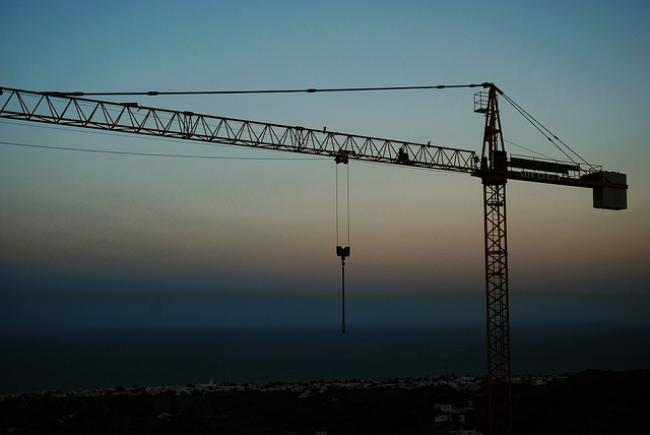
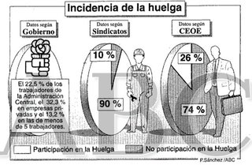
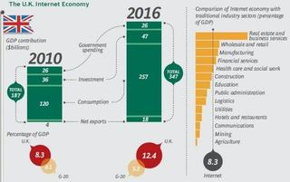
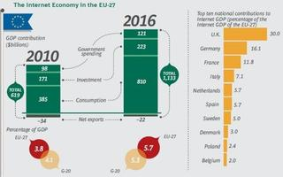
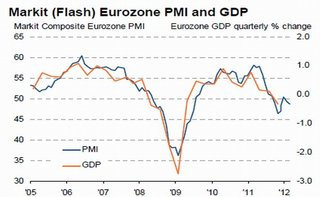
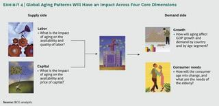

Tue, 27 Mar 2012 05:07:09 GMT
El derroche autonómico que lo explica todo
El derroche autonómico que lo explica todo
Como ya comenté en otro artículo, a mi esto de los “hispanobonos” me da un poco de grima. A efectos prácticos no es más que coger un poco de deuda basura por aquí y unirla con otro poco de deuda más saneada por allá. Y así, todo mezclado y untado, tendremos una deuda autonómica global lista para salir a subasta y a la que sólo le falta que llegue Fitch y la califique como AAA. No nos damos cuenta de que el uso que se le da al dinero público comienza a ser dramático. Yo no se por qué pero siempre me he imaginado a un alcalde como el cortijero que llega a su cortijo y empieza a hacer y deshacer a su antojo. Con la diferencia, claro está, de que el dinero que maneja no es suyo. Y cuando algo no es tuyo, no nos engañemos, duele menos. Y en medio de todo este follón están las comunidades autónomas, entes que han hecho lo que les ha dado la gana los últimos años. El derroche ha sido horrible y ahora, con el grifo de la financiación seco, llegan los problemas. Que si no podemos pagar a proveedores, que si la sanidad es insostenible, que si nadie nos sale muy caro emitir deuda y un largo etcétera. Sin embargo, el derroche queda impune y los derrochadores se van de rositas. Como somos tan olvidadizos y para evitar volver a tropezar en la misma piedra, Sandra Mir y Gabriel Cruz han dejado constancia de esta orgía autonómica de dinero público en un libro titulado La casta autonómica. Su obra, impregnada en un lenguaje de sutil ironía, nos deja para el recuerdo perlas como las siguientes:
El aeropuerto sin aviones de Castellón, el epicentro del derroche. Con una inversión de 111 millones de euros y un gasto de 500.000 euros por tres años en halcones para ahuyentar aves que nunca podrán molestar a los aviones porque estos no vuelan. El capricho de Fabra cuesta además 35 millones de euros sólo en mantenimiento.
En 2002 se construyó en O Porriño (Pontevedra) un complejo faraónico para observar las aves en As Gándaras. Costó 420.000 euros y nunca llegó a inagurarse porque el Ayuntamiento aseguraba que no podía mantenerlo. En Figueres encontramos otro ejemplo, una cárcel que costó a la Generalitat 110 millones y que tampoco llegó a inagurarse porque no pueden mantenerla.
En 2011 se aprobó la creación y docación del Centro de Interpretación de las Caras de Bélmez. El coste de la obra superó los 750.000 euros, de los cuales el Ayuntamiento pagó un 5%, la Diputación un 25% y el resto la UE.
Una parte importante de los 8.000 millones de euros del proyecto estrella de Zapatero para salir de la crisis, el Plan E, se utilizaron en reparar farolas y adoquines, levantar una Puerta de Brandemburgo en Torrejón, cambiar el color de los carriles bici de Valencia o mover 50 metros la estatua de Colón por 4 millones.
La presidencia del Gobierno no es el cargo que mejor cotiza en política. En España hay numerosos alcaldes que superan el sueldo de 78.000 euros del presidente. En Teror, municipio canario de 13.000 habitantes, su alcalde cobra 73,542 euros y el Ayuntamiento debe 9 millones de euros. Y esto no son más que pinceladas de la tremenda magnitud del problema. Los ejemplos de derroche autonómico se suceden a lo largo y ancho del país. La descentralización del Estado ha despertado la picaresca de una clase política que no otorga al dinero el valor que le corresponde. Y ante esta situación os pregunto: ¿en serio creéis que abrir de nuevo el grifo de la financiación a las comunidades con los “hispanobonos” es la solución? Vía | Expansión En El Blog Salmón | De los creadores de los bonos patrióticos, con ustedes los “hispanobobos” Imagen | Images of money
Como ya comenté en otro artículo, a mi esto de los “hispanobonos” me da un poco de grima. A efectos prácticos no es más que coger un poco de deuda basura por aquí y unirla con otro poco de deuda más saneada por allá. Y así, todo mezclado y untado, tendremos una deuda autonómica global lista para salir a subasta y a la que sólo le falta que llegue Fitch y la califique como AAA.
No nos damos cuenta de que el uso que se le da al dinero público comienza a ser dramático. Yo no se por qué pero siempre me he imaginado a un alcalde como el cortijero que llega a su cortijo y empieza a hacer y deshacer a su antojo. Con la diferencia, claro está, de que el dinero que maneja no es suyo. Y cuando algo no es tuyo, no nos engañemos, duele menos.
Y en medio de todo este follón están las comunidades autónomas, entes que han hecho lo que les ha dado la gana los últimos años. El derroche ha sido horrible y ahora, con el grifo de la financiación seco, llegan los problemas. Que si no podemos pagar a proveedores, que si la sanidad es insostenible, que si nadie nos sale muy caro emitir deuda y un largo etcétera. Sin embargo, el derroche queda impune y los derrochadores se van de rositas.
Como somos tan olvidadizos y para evitar volver a tropezar en la misma piedra, Sandra Mir y Gabriel Cruz han dejado constancia de esta orgía autonómica de dinero público en un libro titulado La casta autonómica. Su obra, impregnada en un lenguaje de sutil ironía, nos deja para el recuerdo perlas como las siguientes:
-
El aeropuerto sin aviones de Castellón, el epicentro del derroche. Con una inversión de 111 millones de euros y un gasto de 500.000 euros por tres años en halcones para ahuyentar aves que nunca podrán molestar a los aviones porque estos no vuelan. El capricho de Fabra cuesta además 35 millones de euros sólo en mantenimiento.
- En 2002 se construyó en O Porriño (Pontevedra) un complejo faraónico para observar las aves en As Gándaras. Costó 420.000 euros y nunca llegó a inagurarse porque el Ayuntamiento aseguraba que no podía mantenerlo. En Figueres encontramos otro ejemplo, una cárcel que costó a la Generalitat 110 millones y que tampoco llegó a inagurarse porque no pueden mantenerla.
- En 2011 se aprobó la creación y docación del Centro de Interpretación de las Caras de Bélmez. El coste de la obra superó los 750.000 euros, de los cuales el Ayuntamiento pagó un 5%, la Diputación un 25% y el resto la UE.
- Una parte importante de los 8.000 millones de euros del proyecto estrella de Zapatero para salir de la crisis, el Plan E, se utilizaron en reparar farolas y adoquines, levantar una Puerta de Brandemburgo en Torrejón, cambiar el color de los carriles bici de Valencia o mover 50 metros la estatua de Colón por 4 millones.
- La presidencia del Gobierno no es el cargo que mejor cotiza en política. En España hay numerosos alcaldes que superan el sueldo de 78.000 euros del presidente. En Teror, municipio canario de 13.000 habitantes, su alcalde cobra 73,542 euros y el Ayuntamiento debe 9 millones de euros.
Y esto no son más que pinceladas de la tremenda magnitud del problema. Los ejemplos de derroche autonómico se suceden a lo largo y ancho del país. La descentralización del Estado ha despertado la picaresca de una clase política que no otorga al dinero el valor que le corresponde. Y ante esta situación os pregunto: ¿en serio creéis que abrir de nuevo el grifo de la financiación a las comunidades con los “hispanobonos” es la solución?
Vía | Expansión
En El Blog Salmón | De los creadores de los bonos patrióticos, con ustedes los “hispanobobos”
Imagen | Images of money

Mon, 26 Mar 2012 10:00:00 GMT
España, capital París
España, capital París
España, capital París es un libro sobre economía e infraestructuras en España. El libro hace un análisis en profundidad de la política de infraestructuras que hemos tenido desde la época de los Austrias hasta la actualidad. En esta edición actualizada, de marzo de 2012, incluye incluso las últimas expansiones la red aeroportuaria y de alta velocidad que hemos tenido en los dos años posteriores a la primera edición del libro, de 2010. La idea del libro, y que pretende defender en todo momento, es que ha sido y sigue siendo un error que la red de infraestructuras de España parta siempre de Madrid. Tanto en autopistas como en Alta Velocidad tenemos una red radial, y si incluimos la inversión aeroportuaria Madrid tiene una posición muy prominente. Lo que intenta explicar el autor es que esta composición radial de las infraestructuras no se corresponde con la realidad económica de España, que es transversal. Cuando las infraestructuras comenzaron, lo hicieron en otros sitios, y cuando la política intervino lo hizo para crear una red radial. Es por eso que no hay una distribución homogénea de los peajes en España, porque están en las vías de mayor ocupación debido a que la iniciativa privada realizó dichas infraestructuras. El texto está muy documentado y pone como ejemplos países de nuestro entorno, de similar tamaño como son Reino Unido, Francia, Italia, Alemania. Y explica como nuestra política de infraestructuras es excesivamente cara y centralizada, tanto en autopistas, ferrocarriles y aeropuertos. El libro me ha parecido impecable en los datos que ofrecía pero a veces muy político en los análisis. A veces hace comentarios que no vienen a cuento (como criticar que la Alta Velocidad en España se llame AVE). De hecho me quedo más con sus críticas a la excesiva inversión en infraestructuras que se ha hecho en España (con autopistas y alta velocidad en recorridos de poca demanda) que a la crítica radial. Bueno, mi opinión también está sesgada, yo soy de Madrid y el autor del libro es catalán. Tampoco comparto la aversión del autor a la Alta Velocidad. Sí estoy de acuerdo en que debería haber habido más inversión en mercancías y en el corredor mediterráneo, pero lo cierto es que las infraestructuras ferroviarias en España estaban muy anticuadas cuando empezó el AVE, la actualización de los tramos existentes era muy complicada por la orografía de España y era mejor empezar de nuevo (aunque es muy caro). En definitiva, un libro con muchos datos interesantes y un análisis para tomar con algo de escepticismo, aunque he de reconocer que comparto muchas de sus opiniones y me ha convencido de otras cosas (como la gestión descentralizada de aeropuertos).

España, capital París es un libro sobre economía e infraestructuras en España. El libro hace un análisis en profundidad de la política de infraestructuras que hemos tenido desde la época de los Austrias hasta la actualidad. En esta edición actualizada, de marzo de 2012, incluye incluso las últimas expansiones la red aeroportuaria y de alta velocidad que hemos tenido en los dos años posteriores a la primera edición del libro, de 2010.
La idea del libro, y que pretende defender en todo momento, es que ha sido y sigue siendo un error que la red de infraestructuras de España parta siempre de Madrid. Tanto en autopistas como en Alta Velocidad tenemos una red radial, y si incluimos la inversión aeroportuaria Madrid tiene una posición muy prominente.
Lo que intenta explicar el autor es que esta composición radial de las infraestructuras no se corresponde con la realidad económica de España, que es transversal. Cuando las infraestructuras comenzaron, lo hicieron en otros sitios, y cuando la política intervino lo hizo para crear una red radial. Es por eso que no hay una distribución homogénea de los peajes en España, porque están en las vías de mayor ocupación debido a que la iniciativa privada realizó dichas infraestructuras.
El texto está muy documentado y pone como ejemplos países de nuestro entorno, de similar tamaño como son Reino Unido, Francia, Italia, Alemania. Y explica como nuestra política de infraestructuras es excesivamente cara y centralizada, tanto en autopistas, ferrocarriles y aeropuertos.
El libro me ha parecido impecable en los datos que ofrecía pero a veces muy político en los análisis. A veces hace comentarios que no vienen a cuento (como criticar que la Alta Velocidad en España se llame AVE). De hecho me quedo más con sus críticas a la excesiva inversión en infraestructuras que se ha hecho en España (con autopistas y alta velocidad en recorridos de poca demanda) que a la crítica radial. Bueno, mi opinión también está sesgada, yo soy de Madrid y el autor del libro es catalán.
Tampoco comparto la aversión del autor a la Alta Velocidad. Sí estoy de acuerdo en que debería haber habido más inversión en mercancías y en el corredor mediterráneo, pero lo cierto es que las infraestructuras ferroviarias en España estaban muy anticuadas cuando empezó el AVE, la actualización de los tramos existentes era muy complicada por la orografía de España y era mejor empezar de nuevo (aunque es muy caro).
En definitiva, un libro con muchos datos interesantes y un análisis para tomar con algo de escepticismo, aunque he de reconocer que comparto muchas de sus opiniones y me ha convencido de otras cosas (como la gestión descentralizada de aeropuertos).
Mon, 26 Mar 2012 09:00:00 GMT
Emitir hispanobonos para ayudar a financiar las comunidades. La encuesta de la semana
Emitir hispanobonos para ayudar a financiar las comunidades. La encuesta de la semana
El Mismiterio de Economía está estudiando implantar los hispanobonos para tratar de ayudar a las comunidades autónomas a hacer frente a sus dificultades de financiación emitiendo una deuda que agrupe las de todas las comunidades. Esta semana os encuestamos sobre estos hispanobonos. Podéis usar los comentarios para arrojar luz sobre el tema, si hay o no forma de cambiar las cosas, si hay necesidad de hacerlo, si el gobierno debería intervenir más o menos, como debería hacerlo. El próximo viernes publicaremos los resultados. Y como cada lunes, queremos agradeceros vuestra participación, ya que sin vosotros esta sección no sería posible. En El Blog Salmón | De los creadores de los bonos patrióticos, con ustedes los “hispanobobos”

El Mismiterio de Economía está estudiando implantar los hispanobonos para tratar de ayudar a las comunidades autónomas a hacer frente a sus dificultades de financiación emitiendo una deuda que agrupe las de todas las comunidades. Esta semana os encuestamos sobre estos hispanobonos. Podéis usar los comentarios para arrojar luz sobre el tema, si hay o no forma de cambiar las cosas, si hay necesidad de hacerlo, si el gobierno debería intervenir más o menos, como debería hacerlo.
El próximo viernes publicaremos los resultados. Y como cada lunes, queremos agradeceros vuestra participación, ya que sin vosotros esta sección no sería posible.
En El Blog Salmón | De los creadores de los bonos patrióticos, con ustedes los “hispanobobos”
Mon, 26 Mar 2012 06:05:47 GMT
¿Qué opinión os merecen los hispanobonos? La pregunta de la semana
¿Qué opinión os merecen los hispanobonos? La pregunta de la semana
Esta semana ha salido a la luz la idea de los “hispanobonos”, ya se ha hablado aquí de la posibilidad que se cuece de que se emitan bonos que aúnen las deudas de todas las comunidades autónomas. ¿Qué os parecen a vosotros? son las respuestas que buscamos en nuestra pregunta de la semana. ¿Qué opinión os merecen los “hispanobonos”? La semana pasada preguntamos: ¿Qué opinas del copago (o repago) sanitario? Y la mejor respuesta, la más valorada entre una buena cantidad de interesantes propuestas que merece la pena leer, es la de Ajetreo Seis, que dice así: Estoy a favor del copago de los pensionistas y de los beneficiarios de los pensionistas. No estoy a favor del euro por receta para los activos, debería aplicarse solo a los pensionistas pues los otros ya pagan el 40%. Ah y soy pensionista por si hubiera dudas. También vería acertado introducir una tasa por consulta médica de 5 euros y otra por estancia hospitalaria y traslado en ambulancia. Todo esto debido al abuso que observo constantemente y al poco valor que le da la gente a estos servicios que “ya los pago con la cotización” cuando precisamente con la cotización no se paga nada de la sanidad y además cuanto más trampean con los impuestos y mas amigos son de la economia sumergida, más consumen recursos sanitarios sin eficienecia. Iral médico para que les recete ibuprofenos ( por decir algo) para el dolor de cabezasignifica que por los 5 euros que tu él se ahorra ocasiona un gasto de 55 a todos. Un sistema así es claramente insostenible.
La próxima semana volvemos con más preguntas. Mientras tanto no olvidéis que en El Blog Salmón Respuestas podéis preguntar y contestar a todos los temas económicos que queráis, y que es allí donde deberéis dar respuesta a la pregunta que os planteamos esta semana, ya que los comentarios aquí están inhabilitados. En El Blog Salmón | Respuestas

Esta semana ha salido a la luz la idea de los “hispanobonos”, ya se ha hablado aquí de la posibilidad que se cuece de que se emitan bonos que aúnen las deudas de todas las comunidades autónomas. ¿Qué os parecen a vosotros? son las respuestas que buscamos en nuestra pregunta de la semana.
¿Qué opinión os merecen los “hispanobonos”?
La semana pasada preguntamos: ¿Qué opinas del copago (o repago) sanitario? Y la mejor respuesta, la más valorada entre una buena cantidad de interesantes propuestas que merece la pena leer, es la de Ajetreo Seis, que dice así:
Estoy a favor del copago de los pensionistas y de los beneficiarios de los pensionistas. No estoy a favor del euro por receta para los activos, debería aplicarse solo a los pensionistas pues los otros ya pagan el 40%. Ah y soy pensionista por si hubiera dudas. También vería acertado introducir una tasa por consulta médica de 5 euros y otra por estancia hospitalaria y traslado en ambulancia.
Todo esto debido al abuso que observo constantemente y al poco valor que le da la gente a estos servicios que “ya los pago con la cotización” cuando precisamente con la cotización no se paga nada de la sanidad y además cuanto más trampean con los impuestos y mas amigos son de la economia sumergida, más consumen recursos sanitarios sin eficienecia.
Iral médico para que les recete ibuprofenos ( por decir algo) para el dolor de cabezasignifica que por los 5 euros que tu él se ahorra ocasiona un gasto de 55 a todos. Un sistema así es claramente insostenible.
La próxima semana volvemos con más preguntas. Mientras tanto no olvidéis que en El Blog Salmón Respuestas podéis preguntar y contestar a todos los temas económicos que queráis, y que es allí donde deberéis dar respuesta a la pregunta que os planteamos esta semana, ya que los comentarios aquí están inhabilitados.
En El Blog Salmón | Respuestas
Sun, 25 Mar 2012 04:30:00 GMT
Los "hispanobonos", el tema de la semana
Los "hispanobonos", el tema de la semana
Esta semana tuvimos la filtración de que el Ministerio de Economía está preparando lo que ya se ha conocido como “hispanobonos”. Esto significaría que en lugar de tener una emisión de deuda pública por parte del Estado y por parte de las Comunidades Autónomas, todas las administraciones se juntarían para emitir una única deuda pública. Desde las Comunidades Autónomas ven estos planes con muy buenos ojos. De hecho la Comunidad Valenciana y la Comunidad de Madrid ya se han pronunciado a favor de estos nuevos bonos a pesar de que todavía no hay nada oficial. ¿Por qué tan buenas palabras por parte de las CCAA? Gurusblog lo explica muy bien, simplemente porque verían como se reducirían drásticamente sus costes de financiación. Al final la deuda que emiten estaría garantizada por el Estado y esto haría que los tipos de interés que pagan fueran más bajos. Claro que esta medida no es perfecta, ya que de lo contrario ya la tendríamos aquí hace mucho tiempo (no olvidemos los bonos patrióticos a tipos disparados que han emitido algunas Comunidades). El problema es que al ser el Estado la que respaldaría estos bonos, en el fondo está acudiendo al rescate de las Comunidades Autónomas, y los tipos de interés a pagar serían más altos de los que están pagando actualmente. Y si las CCAA no son responsables de sus cuentas emitiendo su propia deuda, imaginaos si encima les financia el Estado a tipos ventajosos. Este es el mismo motivo por el que Alemania no quiere Eurobonos. No quiere pagar más tipos por emisión de su deuda ni hacerse responsable de las cuentas de otros Estados. Pero está claro que no podemos pedir Eurobonos por Europa y luego no querer lo mismo en España. No es una postura coherente y el primer paso para tener Eurobonos es tener “hispanobonos”.

Esta semana tuvimos la filtración de que el Ministerio de Economía está preparando lo que ya se ha conocido como “hispanobonos”. Esto significaría que en lugar de tener una emisión de deuda pública por parte del Estado y por parte de las Comunidades Autónomas, todas las administraciones se juntarían para emitir una única deuda pública.
Desde las Comunidades Autónomas ven estos planes con muy buenos ojos. De hecho la Comunidad Valenciana y la Comunidad de Madrid ya se han pronunciado a favor de estos nuevos bonos a pesar de que todavía no hay nada oficial.
¿Por qué tan buenas palabras por parte de las CCAA? Gurusblog lo explica muy bien, simplemente porque verían como se reducirían drásticamente sus costes de financiación. Al final la deuda que emiten estaría garantizada por el Estado y esto haría que los tipos de interés que pagan fueran más bajos.
Claro que esta medida no es perfecta, ya que de lo contrario ya la tendríamos aquí hace mucho tiempo (no olvidemos los bonos patrióticos a tipos disparados que han emitido algunas Comunidades). El problema es que al ser el Estado la que respaldaría estos bonos, en el fondo está acudiendo al rescate de las Comunidades Autónomas, y los tipos de interés a pagar serían más altos de los que están pagando actualmente. Y si las CCAA no son responsables de sus cuentas emitiendo su propia deuda, imaginaos si encima les financia el Estado a tipos ventajosos.
Este es el mismo motivo por el que Alemania no quiere Eurobonos. No quiere pagar más tipos por emisión de su deuda ni hacerse responsable de las cuentas de otros Estados. Pero está claro que no podemos pedir Eurobonos por Europa y luego no querer lo mismo en España. No es una postura coherente y el primer paso para tener Eurobonos es tener “hispanobonos”.
Sat, 24 Mar 2012 08:01:00 GMT
El gasto farmaceútico se dispara y las tarjetas monedero, lo mejor de Entorno El Blog Salmón
El gasto farmaceútico se dispara y las tarjetas monedero, lo mejor de Entorno El Blog Salmón
Continuando con nuestros resúmenes de entradas interesantes en nuestros blogs habituales, vamos a darle paso a la selección de la semana:
El debate del copago sanitario está en boca de todos, y no es un tema baladí. El gasto sanitario se ha disparado. Sin ir más lejos en la última década el gasto farmaceútico se ha duplicado, y no porque los medicamentos sean más caros, sino porque nos medicamos mucho más.
La quita de Grecia puede traer muchas oportunidades de inversión. Si analizamos las grandes quitas de la historia podemos ver que después de que estas se produjeran las bolsas subieron. Eso sí, rentabilidades pasadas no garantizan las futuras, que se suele decir.
Se lleva mucho tiempo hablando de las tarjetas monedero, y la verdad es que son una alternativa muy interesante al dinero en efectivo. ¿Lo veremos generalizado algún día? Quizá gracias a los teléfonos móviles inteligentes.
Tener datos en la nube es una alternativa muy cómoda los backups en las empresas. Sin embargo hay que asegurarse de que los datos confidencias se queden así. Una buena forma de asegurarse en tener la información encriptada en origen. Ya existen alternativas para realizar esto de una forma muy cómoda.
Todo empresario y autónomo debería saber cuáles son los gastos que son legalmente deducibles. No deben pagar más impuestos de los que corresponden, pero tampoco es legal deducirse todos los gastos y luego vienen las sorpresas en las inspecciones.
Aunque podamos pensar lo contrario, no está todo inventado en Marketing, y no hay más que ver la campaña de Samsung en la estación de metro de Sol. Quedan nichos por explorar que den mucha repercusión a una marca. Todo es cuestión de imaginación.
Está en boca de todo el mundo: ¿dónde puedo poner el dinero para dormir tranquilo? Tener claro la seguridad que nos ofrecen algunos productos financieros es garantía para no tener sorpresas.
Vivimos una época de optimización de gastos, y uno de los sitios de donde seguro se puede recortar es en el gasto en telefonía móvil. Para ello os presentamos una guía para elegir tarifa según el uso que le demos. Seguro que os resulta muy interesante.
En El Blog Salmón | Entorno El Blog Salmón
Continuando con nuestros resúmenes de entradas interesantes en nuestros blogs habituales, vamos a darle paso a la selección de la semana:
- El debate del copago sanitario está en boca de todos, y no es un tema baladí. El gasto sanitario se ha disparado. Sin ir más lejos en la última década el gasto farmaceútico se ha duplicado, y no porque los medicamentos sean más caros, sino porque nos medicamos mucho más.
- La quita de Grecia puede traer muchas oportunidades de inversión. Si analizamos las grandes quitas de la historia podemos ver que después de que estas se produjeran las bolsas subieron. Eso sí, rentabilidades pasadas no garantizan las futuras, que se suele decir.
- Se lleva mucho tiempo hablando de las tarjetas monedero, y la verdad es que son una alternativa muy interesante al dinero en efectivo. ¿Lo veremos generalizado algún día? Quizá gracias a los teléfonos móviles inteligentes.
- Tener datos en la nube es una alternativa muy cómoda los backups en las empresas. Sin embargo hay que asegurarse de que los datos confidencias se queden así. Una buena forma de asegurarse en tener la información encriptada en origen. Ya existen alternativas para realizar esto de una forma muy cómoda.
- Todo empresario y autónomo debería saber cuáles son los gastos que son legalmente deducibles. No deben pagar más impuestos de los que corresponden, pero tampoco es legal deducirse todos los gastos y luego vienen las sorpresas en las inspecciones.
- Aunque podamos pensar lo contrario, no está todo inventado en Marketing, y no hay más que ver la campaña de Samsung en la estación de metro de Sol. Quedan nichos por explorar que den mucha repercusión a una marca. Todo es cuestión de imaginación.
- Está en boca de todo el mundo: ¿dónde puedo poner el dinero para dormir tranquilo? Tener claro la seguridad que nos ofrecen algunos productos financieros es garantía para no tener sorpresas.
- Vivimos una época de optimización de gastos, y uno de los sitios de donde seguro se puede recortar es en el gasto en telefonía móvil. Para ello os presentamos una guía para elegir tarifa según el uso que le demos. Seguro que os resulta muy interesante.
En El Blog Salmón | Entorno El Blog Salmón
Fri, 23 Mar 2012 14:44:59 GMT
Atención alcaldes y concejales: se os acabó el chollo de los salarios desorbitados
Atención alcaldes y concejales: se os acabó el chollo de los salarios desorbitados
El Consejo de Ministros de hoy ha dejado una pincelada sobre la retribución pública que reciben los alcaldes y representantes de las entidades locales de tal manera que existirá una baremación máxima de salarios a aplicar. Esto es una excelente noticia para nuestros bolsillos dado que a los alcaldes se les va a acabar el chollo de los salarios desorbitados fijados por ellos mismos. El mecanismo que se plantea es un cambio normativo en la Ley de Presupuestos Generales del Estado de tal forma que la retribución de los alcaldes y resto de miembros de los órganos de Gobierno de las entidades locales tendrán un baremo obligatorio al que fijarse. Esta norma tendrá en cuenta el tipo de entidad local de que se trate, así como a criterios objetivos de población, circunstancias socio-económicas del entorno y otras de carácter administrativo. Pero antes de que salga a la luz esta norma legal, le apunto algunas ideas al Gobierno para que no vuelva a decepcionarnos con la letra pequeña del BOE. Le sugiero por ejemplo las siguientes:
El político que debe tener el salario más alto es el Presidente del Gobierno. No tiene sentido ni lógica alguna tener alcaldes que cobran más que el propio presidente. No vale multiplicar por 3 ó 4 la retribución del presidente del Gobierno para que los alcaldes que cobran por encima de los 70.000 euros no tengan que bajarse el sueldo. Quizá sería planteable como paso previo a esta modificación salarial de alcaldes y concejales, la eliminación, supresión y fusión de ayuntamientos. No perdamos de vista del debate que si pagamos poco en el sector público, tendremos malos gestores y que la corrupción política va asociada tanto a la ambición como a los bajos ingresos.
Por último y no más importante aún. El modelo de concejales y representantes locales es un modelo que no es eficiente. Ojo, no digo que los ciudadanos eligan a sus representantes públicos pero en la mayoría de los casos, los concejales de pueblo estorban, frenan o equivocan la propia gestión que llevan a cabo los técnicos municipales y los funcionarios cualificados de dichos entes locales. Apuntando estas ideas, me queda la idea de que el Gobierno va a tirar por la calle del centro poniendo en práctica una medida populista, más que una reforma de calado de las administraciones públicas, que son las reformas que habría que poner en marcha cuanto antes. Nota y bonustrack: IU ya propuso en el año pasado la regulación de los salarios de los políticos En El Blog Salmón | Próximo tijeretazo, el sector público empresarial, El analfabetismo de los políticos y sus bajos salarios, Respuesta a lo que cobran los políticos Imagen | Mordicuac
El Consejo de Ministros de hoy ha dejado una pincelada sobre la retribución pública que reciben los alcaldes y representantes de las entidades locales de tal manera que existirá una baremación máxima de salarios a aplicar. Esto es una excelente noticia para nuestros bolsillos dado que a los alcaldes se les va a acabar el chollo de los salarios desorbitados fijados por ellos mismos.
El mecanismo que se plantea es un cambio normativo en la Ley de Presupuestos Generales del Estado de tal forma que la retribución de los alcaldes y resto de miembros de los órganos de Gobierno de las entidades locales tendrán un baremo obligatorio al que fijarse. Esta norma tendrá en cuenta el tipo de entidad local de que se trate, así como a criterios objetivos de población, circunstancias socio-económicas del entorno y otras de carácter administrativo.
Pero antes de que salga a la luz esta norma legal, le apunto algunas ideas al Gobierno para que no vuelva a decepcionarnos con la letra pequeña del BOE. Le sugiero por ejemplo las siguientes:
- El político que debe tener el salario más alto es el Presidente del Gobierno. No tiene sentido ni lógica alguna tener alcaldes que cobran más que el propio presidente.
- No vale multiplicar por 3 ó 4 la retribución del presidente del Gobierno para que los alcaldes que cobran por encima de los 70.000 euros no tengan que bajarse el sueldo.
- Quizá sería planteable como paso previo a esta modificación salarial de alcaldes y concejales, la eliminación, supresión y fusión de ayuntamientos.
- No perdamos de vista del debate que si pagamos poco en el sector público, tendremos malos gestores y que la corrupción política va asociada tanto a la ambición como a los bajos ingresos.
- Por último y no más importante aún. El modelo de concejales y representantes locales es un modelo que no es eficiente. Ojo, no digo que los ciudadanos eligan a sus representantes públicos pero en la mayoría de los casos, los concejales de pueblo estorban, frenan o equivocan la propia gestión que llevan a cabo los técnicos municipales y los funcionarios cualificados de dichos entes locales.
Apuntando estas ideas, me queda la idea de que
el Gobierno va a tirar por la calle del centro poniendo en práctica una medida populista, más que una reforma de calado de las administraciones públicas, que son las reformas que habría que poner en marcha cuanto antes.
Nota y bonustrack: IU ya propuso en el año pasado la regulación de los salarios de los políticos
En El Blog Salmón | Próximo tijeretazo, el sector público empresarial, El analfabetismo de los políticos y sus bajos salarios, Respuesta a lo que cobran los políticos
Imagen | Mordicuac
Fri, 23 Mar 2012 10:00:00 GMT
Los lectores no encuentran justificados los precios de la energía
Los lectores no encuentran justificados los precios de la energía
Hoy os traemos los resultados de la encuesta de la semana. Y en esta ocasión os pedíamos que dierais vuestra opinión sobre las líneas de crédito para las pymes, agradecemos la colaboración a los 820 lectores que habéis participado, ya que sin vosotros esta sección no sería posible. Primero preguntamos sobre el precio de la energía en España, la inmensa mayoría opina que el precio es elevado y que podría ser más barato, de hecho somos el tercer país de la unión europea con el precio de la energía más caro, a pesar de que nuestro clima es muy favorable para la generación de energías renovables. Por más que las eléctricas tarten de justificar sus precios, la percepción casi unánime es de que podrían ser más baratos. La segunda pregunta viene a arrojar algo de luz sobre el motivo de los elevados precios, la percepción generalizada entre nuestros lectores es que más que una competencia real, lo que tenemos es un oligopolio entre las compañías energéticas y esto no es sólo aplicable a las empresas eléctricas, de todos es conocida la similitud de precios de los carburantes entre unas y otras compañías, con movimientos en paralelo de subida o de bajada. Con respecto a la quita voluntaria que se ofrece a las empresas para que puedan cobrar antes, a más de la mitad de los lectores les parece un abuso, un poco más de un 30% se conforman con eso antes de seguir esperando en la incertidumbre de si se cobrará o no y cuando. < Con respecto al contínuo aumento de precios de la energía los lectores también tienen una opinión bastante unánime, no está justificado que no deje de subir el precio, con unas centrales productoras ya amortizadas (hidroeléctricas, térmicas y nucleares), cuesta creer que sean las renovables las que hagan que los precios no dejen de subir. Por último, preguntados sobre el papel que debería jugar el gobierno en el establecimiento de precios de la energía, casi una cuarta parte de los encuestados opina que el gobierno debería abstenerse de fijar precios, mientras que alrededor de un 70% opinan que se deberían fijar unos precios máximos, tan sólo un poco más de un 5% de los lectores creen que el gobierno debería fijar los precios mínimos. En resumen, si dependiese de los resultados de esta encuesta, la energía tendría unos precios más baratos, con máximos fijados por el gobierno, y la competencia entre las compañías eléctricas debería estar bajo la lupa de la justicia, que en este caso sí parece bastante ciega. Muchas gracias por participar. El lunes volveremos con una nueva encuesta. En El Blog Salmón | La insaciable avaricia de las eléctricas
Hoy os traemos los resultados de la encuesta de la semana. Y en esta ocasión os pedíamos que dierais vuestra opinión sobre las líneas de crédito para las pymes, agradecemos la colaboración a los 820 lectores que habéis participado, ya que sin vosotros esta sección no sería posible.
Primero preguntamos sobre el precio de la energía en España, la inmensa mayoría opina que el precio es elevado y que podría ser más barato, de hecho somos el tercer país de la unión europea con el precio de la energía más caro, a pesar de que nuestro clima es muy favorable para la generación de energías renovables. Por más que las eléctricas tarten de justificar sus precios, la percepción casi unánime es de que podrían ser más baratos.
La segunda pregunta viene a arrojar algo de luz sobre el motivo de los elevados precios, la percepción generalizada entre nuestros lectores es que más que una competencia real, lo que tenemos es un oligopolio entre las compañías energéticas y esto no es sólo aplicable a las empresas eléctricas, de todos es conocida la similitud de precios de los carburantes entre unas y otras compañías, con movimientos en paralelo de subida o de bajada.
Con respecto a la quita voluntaria que se ofrece a las empresas para que puedan cobrar antes, a más de la mitad de los lectores les parece un abuso, un poco más de un 30% se conforman con eso antes de seguir esperando en la incertidumbre de si se cobrará o no y cuando.
<
Con respecto al contínuo aumento de precios de la energía los lectores también tienen una opinión bastante unánime, no está justificado que no deje de subir el precio, con unas centrales productoras ya amortizadas (hidroeléctricas, térmicas y nucleares), cuesta creer que sean las renovables las que hagan que los precios no dejen de subir.
Por último, preguntados sobre el papel que debería jugar el gobierno en el establecimiento de precios de la energía, casi una cuarta parte de los encuestados opina que el gobierno debería abstenerse de fijar precios, mientras que alrededor de un 70% opinan que se deberían fijar unos precios máximos, tan sólo un poco más de un 5% de los lectores creen que el gobierno debería fijar los precios mínimos.
En resumen, si dependiese de los resultados de esta encuesta, la energía tendría unos precios más baratos, con máximos fijados por el gobierno, y la competencia entre las compañías eléctricas debería estar bajo la lupa de la justicia, que en este caso sí parece bastante ciega.
Muchas gracias por participar. El lunes volveremos con una nueva encuesta.
En El Blog Salmón | La insaciable avaricia de las eléctricas
Fri, 23 Mar 2012 06:21:25 GMT
Mentores
Mentores
No sé si alguno de los lectores recuerda la serie/comedia “Boy Meets World”, que fue traducida aquí como “Yo y el mundo”. En ella se narra la vida de un grupo de chicos desde las primeras etapas del instituto hasta que finalizan la universidad, tutelados por Mr Feeny, un profesor de instituto y vecino de dos hermanos. El caso es que el personaje de Mr Feeny hace de mentor de ellos y les va guiando por la vida hasta que llega un punto en el que se tienen que mudar y se acaba la serie (algún día tenía que hacerlo). Pero lo que me ha interesado de esta serie es la idea de la relación “mentor alumno” que tiene Feeny con los estudiantes, especialmente con Cory. En el mundo profesional no es raro ver a mentores, siendo estos de dos tipos. Por un lado están aquellos que cobran por serlo y aquellos que acaban dando lecciones gratis. La verdad es que salvo alguna excepción, suelo preferir a los segundos. Existen muchas personas junto a las cuales se aprende casi por osmosis, por estar a su lado. Ya he conocido a varios, personas con las que se intenta pasar cualquier cantidad de tiempo, porque aprendes de ellos. Personalmente nunca he tenido alguien que me acompañara de ese modo durante tanto tiempo a lo largo de la historia de mi crecimiento. Supongo que el haber tenido que cambiar mucho de residencia y de institución educativa no ayudaba. Pero si he visto que hay muchas personas de las que se puede aprender, supongo que no he tenido un mentor, sino muchos. Aparte que por mi forma de ser no sé si sería capaz de tener solo uno, sino que necesito muchos de los que coger lo (que considero) mejor de cada uno. ¿Cómo se consigue un mentor? En mi experiencia es un tema de hablar con la gente, interesarte por lo que te puedan contar, ser educado, preguntar, etc. Una vez me dieron un consejo bastante bueno, ten en cuenta que a la gente le suele gustar ayudar, que les suele gustar que les pongas en un pedestal, que les gusta ver que lo que saben les sirve o les interesa a otros. Pregunta a los lectores ¿cuáles han sido los mejores mentores que han tenido? En El Blog Salmón | ¿Qué hacen los despedidos por Nokia? y ¿Y si la conciliación fuera un mito?
No sé si alguno de los lectores recuerda la serie/comedia “Boy Meets World”, que fue traducida aquí como “Yo y el mundo”. En ella se narra la vida de un grupo de chicos desde las primeras etapas del instituto hasta que finalizan la universidad, tutelados por Mr Feeny, un profesor de instituto y vecino de dos hermanos.
El caso es que el personaje de Mr Feeny hace de mentor de ellos y les va guiando por la vida hasta que llega un punto en el que se tienen que mudar y se acaba la serie (algún día tenía que hacerlo). Pero lo que me ha interesado de esta serie es la idea de la relación “mentor alumno” que tiene Feeny con los estudiantes, especialmente con Cory.
En el mundo profesional no es raro ver a mentores, siendo estos de dos tipos. Por un lado están aquellos que cobran por serlo y aquellos que acaban dando lecciones gratis. La verdad es que salvo alguna excepción, suelo preferir a los segundos. Existen muchas personas junto a las cuales se aprende casi por osmosis, por estar a su lado. Ya he conocido a varios, personas con las que se intenta pasar cualquier cantidad de tiempo, porque aprendes de ellos.
Personalmente nunca he tenido alguien que me acompañara de ese modo durante tanto tiempo a lo largo de la historia de mi crecimiento. Supongo que el haber tenido que cambiar mucho de residencia y de institución educativa no ayudaba. Pero si he visto que hay muchas personas de las que se puede aprender, supongo que no he tenido un mentor, sino muchos. Aparte que por mi forma de ser no sé si sería capaz de tener solo uno, sino que necesito muchos de los que coger lo (que considero) mejor de cada uno.
¿Cómo se consigue un mentor? En mi experiencia es un tema de hablar con la gente, interesarte por lo que te puedan contar, ser educado, preguntar, etc. Una vez me dieron un consejo bastante bueno, ten en cuenta que a la gente le suele gustar ayudar, que les suele gustar que les pongas en un pedestal, que les gusta ver que lo que saben les sirve o les interesa a otros.
Pregunta a los lectores ¿cuáles han sido los mejores mentores que han tenido?
En El Blog Salmón | ¿Qué hacen los despedidos por Nokia? y ¿Y si la conciliación fuera un mito?
Thu, 22 Mar 2012 20:28:20 GMT
De los creadores de los bonos patrióticos, con ustedes los "hispanobobos"
De los creadores de los bonos patrióticos, con ustedes los "hispanobobos"
Nos merecemos todo lo malo que nos pase porque no vamos a aprender nunca la lección. Al parecer, el Ministerio de Economía está estudiando seriamente la posibilidad de emitir “hispanobonos”, o como yo prefiero llamarlo, “hispanobobos”, que agrupen la deuda de todas las comunidades autonómicas. Esto, para que nos entendamos, es lo mismo que los eurobonos que tan poco gustan en Alemania pero en versión hispana. La idea que se tantea consiste en que el Estado emite (y avala) deuda representativa de las comunidades autónomas y luego reparte el dinero recaudado entre las mismas de forma proporcional. El objetivo sería facilitar la financiación a CC.AA. con problemas, como Castilla y León, Cataluña o Valencia a costa de encarecer a las otras y al Estado en su conjunto. Aunque el proyecto está en el aire ya existen fechas y cifras. Según un portavoz del Ministerio de Economía la primera emisión de “hispanobobos” sería en Junio y se prevé que las comunidades autónomas ahorren alrededor de 1.000 millones de euros en intereses gracias al aval del Estado. Como contrapartida, estas tendrían que cumplir ciertos requerimientos del Estado, esto es, cumplir con los objetivos de déficit. La verdad, no lo acabo de entender. Yo pensé que la idea era reducir gastos innecesarios de los Presupuestos Generales del Estado, borrar del mapa ministerios sin funciones demostrables o incentivar a las empresas a generar empleo. Sin embargo, lo que se va a hacer es permitir que las CC.AA. se endeuden aún más de lo que están. Los “hispanobobos” volverán a dar vidilla a las impopulares embajadas autonómicas y a las inversiones superfluas en nacionalismos y publicidad local, por poner algunos ejemplos. En mi opinión, las comunidades con menos problemas financieros no deberían permitir esto. Lo que el Estado debería hacer es reducir todo ese aparato autonómico que lo único que ha generado en los últimos años ha sido déficit. Muchas de las competencias gestionadas por las comunidades han sido como un pozo sin final. Los “hispanobobos” son como las hipotecas subprime y lo único que generarán será más y más deuda. Con ustedes, el eterno retorno de lo idéntico. En El Blog Salmón | Nueva línea ICO para las autonomías, en ministerio de Economía al rescate de las CCAA, El Banco de España pide más transparencia en las cuentas autonómicas
Nos merecemos todo lo malo que nos pase porque no vamos a aprender nunca la lección. Al parecer, el Ministerio de Economía está estudiando seriamente la posibilidad de emitir “hispanobonos”, o como yo prefiero llamarlo, “hispanobobos”, que agrupen la deuda de todas las comunidades autonómicas. Esto, para que nos entendamos, es lo mismo que los eurobonos que tan poco gustan en Alemania pero en versión hispana.
La idea que se tantea consiste en que el Estado emite (y avala) deuda representativa de las comunidades autónomas y luego reparte el dinero recaudado entre las mismas de forma proporcional. El objetivo sería facilitar la financiación a CC.AA. con problemas, como Castilla y León, Cataluña o Valencia a costa de encarecer a las otras y al Estado en su conjunto.
Aunque el proyecto está en el aire ya existen fechas y cifras. Según un portavoz del Ministerio de Economía la primera emisión de “hispanobobos” sería en Junio y se prevé que las comunidades autónomas ahorren alrededor de 1.000 millones de euros en intereses gracias al aval del Estado. Como contrapartida, estas tendrían que cumplir ciertos requerimientos del Estado, esto es, cumplir con los objetivos de déficit.
La verdad, no lo acabo de entender. Yo pensé que la idea era reducir gastos innecesarios de los Presupuestos Generales del Estado, borrar del mapa ministerios sin funciones demostrables o incentivar a las empresas a generar empleo. Sin embargo, lo que se va a hacer es permitir que las CC.AA. se endeuden aún más de lo que están. Los “hispanobobos” volverán a dar vidilla a las impopulares embajadas autonómicas y a las inversiones superfluas en nacionalismos y publicidad local, por poner algunos ejemplos.
En mi opinión, las comunidades con menos problemas financieros no deberían permitir esto. Lo que el Estado debería hacer es reducir todo ese aparato autonómico que lo único que ha generado en los últimos años ha sido déficit. Muchas de las competencias gestionadas por las comunidades han sido como un pozo sin final. Los “hispanobobos” son como las hipotecas subprime y lo único que generarán será más y más deuda. Con ustedes, el eterno retorno de lo idéntico.
En El Blog Salmón | Nueva línea ICO para las autonomías, en ministerio de Economía al rescate de las CCAA, El Banco de España pide más transparencia en las cuentas autonómicas
Wed, 21 Mar 2012 17:51:17 GMT
Nuevas fuentes de ingresos para la Administración Pública (I)
Nuevas fuentes de ingresos para la Administración Pública (I)
Me temo que la tripulación del navío España no es consciente de las dimensiones de la borrasca. La crisis fiscal, de las cuentas publicas, no es tal, no es algo puntual. Hemos pasado a otra fase y lo anterior no volverá. El subir los impuestos a los que no pueden escaquearse tiene un tope. Y pronto lo veremos. Por ello, ya dado mi espíritu solidario, me animo a apuntar dos nuevas fuentes de ingresos para la Administración Pública. Aviso que son heterodoxas, que es posible que haya algo de mala leche subyacente en ellas, que incluso atenten en última instancia contra mis principios liberales y alarguen la agonía de un Estado que se ha merecido morir de esta manera, pero hoy tengo el punto pragmático, que le vamos a hacer. ¿De dónde puede extraer la Hacienda Pública ese dinero? Empecemos con los naming rights que, salvo que alguien me corrija podemos asimilar a patrocinio. Recientemente ha habido murmullos por el hecho de que la estación de metro de Sol de Madrid haya cambiado de nombre temporalmente. Ha añadido el del producto de un patrocinador privado cobrando sus euros por ello. Desde aquí doy la la bienvenida a Sol Galaxy Note y estoy encantado de que esto suponga un ingreso sin sangrar al contribuyente por enésima vez. Pero, entre nosotros, me sabe a poco. Apostaría por la vía del patrocinio para edificios oficiales, incorporaría publicidad en los sobres de las comunicaciones administrativas, y si me apuráis hasta en los propios impresos. Se me ocurren asociaciones marca-impresos de alto valor añadido. Si, aquí reconozco pasarme un poco de frenada y prefiero no dar ideas más concretas. Pero, sobre todo, aplicaría este modelo a las nuevas calles y parques (que, desgraciadamente, no abundarán): todo vial público nuevo, todo espacio público urbanizado sin nombre debería sacar a concurso su patrocinio. Alguno dirá que vivir en la calle Movifone de Leganés no mola, pero así evitábamos las peleas de los políticos por colocarnos a sus corifeos en las placas, nos asegurábamos que no las cambiarían cada dos por tres (con los costes que nos supone a los particulares) y quizás ingresábamos un pelllizco considerable. Quien quiera homenajear a alguien, general, actriz o referencia espiritual, que lo haga con dinero de su bolsillo. En el siguiente post, otra opción “peculiar” para que Hacienda obtenga sus dineros sin machacar a los que levantamos la persiana todos los días. En El Blog Salmón | Vodafone patrocina la Formula Uno y quiere vender más en España Más información | MKMarkting+Ventas.es
Me temo que la tripulación del navío España no es consciente de las dimensiones de la borrasca. La crisis fiscal, de las cuentas publicas, no es tal, no es algo puntual. Hemos pasado a otra fase y lo anterior no volverá. El subir los impuestos a los que no pueden escaquearse tiene un tope. Y pronto lo veremos. Por ello, ya dado mi espíritu solidario, me animo a apuntar dos nuevas fuentes de ingresos para la Administración Pública.
Aviso que son heterodoxas, que es posible que haya algo de mala leche subyacente en ellas, que incluso atenten en última instancia contra mis principios liberales y alarguen la agonía de un Estado que se ha merecido morir de esta manera, pero hoy tengo el punto pragmático, que le vamos a hacer. ¿De dónde puede extraer la Hacienda Pública ese dinero?
Empecemos con los naming rights que, salvo que alguien me corrija podemos asimilar a patrocinio. Recientemente ha habido murmullos por el hecho de que la estación de metro de Sol de Madrid haya cambiado de nombre temporalmente. Ha añadido el del producto de un patrocinador privado cobrando sus euros por ello. Desde aquí doy la la bienvenida a Sol Galaxy Note y estoy encantado de que esto suponga un ingreso sin sangrar al contribuyente por enésima vez.
Pero, entre nosotros, me sabe a poco. Apostaría por la vía del patrocinio para edificios oficiales, incorporaría publicidad en los sobres de las comunicaciones administrativas, y si me apuráis hasta en los propios impresos. Se me ocurren asociaciones marca-impresos de alto valor añadido. Si, aquí reconozco pasarme un poco de frenada y prefiero no dar ideas más concretas.
Pero, sobre todo, aplicaría este modelo a las nuevas calles y parques (que, desgraciadamente, no abundarán): todo vial público nuevo, todo espacio público urbanizado sin nombre debería sacar a concurso su patrocinio. Alguno dirá que vivir en la calle Movifone de Leganés no mola, pero así evitábamos las peleas de los políticos por colocarnos a sus corifeos en las placas, nos asegurábamos que no las cambiarían cada dos por tres (con los costes que nos supone a los particulares) y quizás ingresábamos un pelllizco considerable.
Quien quiera homenajear a alguien, general, actriz o referencia espiritual, que lo haga con dinero de su bolsillo.
En el siguiente post, otra opción “peculiar” para que Hacienda obtenga sus dineros sin machacar a los que levantamos la persiana todos los días.
En El Blog Salmón | Vodafone patrocina la Formula Uno y quiere vender más en España
Más información | MKMarkting+Ventas.es
Wed, 21 Mar 2012 10:00:00 GMT
¿Se está cocinando una burbuja inmobiliaria en Alemania?
¿Se está cocinando una burbuja inmobiliaria en Alemania?
La sombra de una burbuja inmobiliaria acecha en Alemania y en el BCE se intentan poner las pilas para que esta no llegue a formarse. Según sus informes, los alemanes se están aprovechando de los bajos tipos de interés existentes en Europa para invertir en la compra de viviendas, lo que está provocando un incremento considerable en el precio de las mismas. Aunque la vivienda en propiedad no suele entrar en los planes de los alemanes, país caracterizado por la alta tasa de alquiler de inmuebles entre sus ciudadanos, el porcentaje de compradores no ha parado de subir en los últimos meses. Tanto es así que que los precios de los inmuebles han subido un 5% en el último año, el doble que la inflación. Si bien es cierto que los precios en las zonas rurales apenas han variado, en las grandes ciudades y en ciertos barrios de Berlin los incrementos son ya superiores al 10%. A pesar de que pienso que Merkel cortará el grifo a tiempo para evitar lo ocurrido en España, no está de más hacer esta pequeña reseña, sobre todo si tenemos en cuenta el patrón inicial de una burbuja inmobiliaria. Aunque la situación no es aún ni muchísimo menos preocupante sí que hemos de considerar que mientras media Europa apenas sale de la recesión, la economía alemana creció un 3% anual en los últimos dos años. Esta situación, unida al crédito barato propiciado por las históricamente bajas tasas de interés pueden provocar una perturbación que recaliente el mercado y genere una oleada de euforia inmobiliaria. Para los analistas la burbuja inmobiliaria aún no existe en Alemania, pero sí que podría gestarse fácilmente si el incremento de precios continua en los próximos años. Aún así, me llama la atención que la noticia salte a los medios cuando el incremento en los precios de los inmuebles es tan sólo del 5%. En España, con subidas del 20%, la sensación era de absoluta calma, aquí no pasaba nada. Y así nos fue. ¿Habrán aprendido los alemanes de la experiencia española? Vía | Expansión En El Blog Salmón | Las siete etapas de una burbuja inmobiliaria, ¿Comienza el hundimiento del precio de la vivienda? Imagen | kyezitri

La sombra de una burbuja inmobiliaria acecha en Alemania y en el BCE se intentan poner las pilas para que esta no llegue a formarse. Según sus informes, los alemanes se están aprovechando de los bajos tipos de interés existentes en Europa para invertir en la compra de viviendas, lo que está provocando un incremento considerable en el precio de las mismas.
Aunque la vivienda en propiedad no suele entrar en los planes de los alemanes, país caracterizado por la alta tasa de alquiler de inmuebles entre sus ciudadanos, el porcentaje de compradores no ha parado de subir en los últimos meses. Tanto es así que que los precios de los inmuebles han subido un 5% en el último año, el doble que la inflación. Si bien es cierto que los precios en las zonas rurales apenas han variado, en las grandes ciudades y en ciertos barrios de Berlin los incrementos son ya superiores al 10%.
A pesar de que pienso que Merkel cortará el grifo a tiempo para evitar lo ocurrido en España, no está de más hacer esta pequeña reseña, sobre todo si tenemos en cuenta el patrón inicial de una burbuja inmobiliaria. Aunque la situación no es aún ni muchísimo menos preocupante sí que hemos de considerar que mientras media Europa apenas sale de la recesión, la economía alemana creció un 3% anual en los últimos dos años. Esta situación, unida al crédito barato propiciado por las históricamente bajas tasas de interés pueden provocar una perturbación que recaliente el mercado y genere una oleada de euforia inmobiliaria.
Para los analistas la burbuja inmobiliaria aún no existe en Alemania, pero sí que podría gestarse fácilmente si el incremento de precios continua en los próximos años. Aún así, me llama la atención que la noticia salte a los medios cuando el incremento en los precios de los inmuebles es tan sólo del 5%. En España, con subidas del 20%, la sensación era de absoluta calma, aquí no pasaba nada. Y así nos fue. ¿Habrán aprendido los alemanes de la experiencia española?
Vía | Expansión
En El Blog Salmón | Las siete etapas de una burbuja inmobiliaria, ¿Comienza el hundimiento del precio de la vivienda?
Imagen | kyezitri
Wed, 21 Mar 2012 08:00:46 GMT
¿Qué es la declaración de prodigalidad?
¿Qué es la declaración de prodigalidad?
En nuestros Conceptos de Economía suele haber sitios para todo. Generalmente tocamos figuras o instituciones básicas, actuales. Pero también hay un rincón para las viejas glorías, para las desconocidas por el gran público, pero que siguen ahí, en estado latente, y que un día pueden despertar de la forma más inesperada. Y es que hoy toca hablar de la declaración de prodigalidad. Tras darle un vistazo a lo que significa y a su regulación, le daremos una vuelta a la posible justificación del supuesto legal de la prodigalidad. Si aún quedan dudas, tenemos los comentarios para ir planteándolas. Definición de prodigalidad No es la primera vez que hablamos de prodigalidad en estas páginas. Recordemos, por ejemplo, la parábola del hijo pródigo. Pero lo cierto es que no es un termino muy usado en nuestro lenguaje habitual, por lo que más de uno acudirá al diccionario. Claro que, a efectos jurídicos, y a falta de una definición legal, en IurisCivilis tiran de la jurisprudencia para llegar a esta (acertada) definición de la prodigalidad. La prodigalidad es la conducta de una persona, que se caracteriza por la habitualidad en la disipación de los bienes propios, malgastándolos de forma desordenada. Frente a este comportamiento nuestra Ley de Enjuiciamiento Civil (art. 757 y ss.) concede al cónyuge, a los descendientes o ascendientes que perciban alimentos del presunto pródigo o se encuentren en situación de reclamárselos y los representantes legales de cualquiera de ellos (o si no, al Ministerio Fiscal) el derecho a instar una declaración judicial de prodigalidad: el juez decretará la consideración de pródigo para dicha persona. Consecuencias de la declaración de prodigalidad A través de la declaración de prodigalidad no se incapacita a la persona, no queda bajo un régimen de tutela, si no de curatela. ¿Qué significa esto? La sentencia fijara una serie de actos de contenido patrimonial que necesitaran de la supervisión y ratificación de un curador. Si se llevan a cabo sin ella, serán anulables a instancia del curador o del propio pródigo cuando deje de serlo. La declaración de prodigalidad carece de efecto retroactivo, los actos anteriores a la misma no pueden ser atacados. La Sentencia determinará en que Registros se inscribirá dicha declaración a efectos de garantizar su eficacia: en el Civil necesariamente, pero además también se puede en el Mercantil, en el de la Propiedad Inmobiliaria, u otros de carácter administrativo o privado. Justificación histórica de la declaración de prodigalidad En estos tiempos que vivimos reconozco que ha de sonar raro lo de la declaración de prodigalidad. El propio legislador estuvo en los años 80 por cargarse esta figura, y en el 2007 la sacó prácticamente del Código Civil salvo algún artículo suelto, quedando regulada fundamentalmente en la Ley de Enjuiciamiento Civil. ¿Qué fundamentos había para regular la declaración de prodigalidad y por qué parecen haber perdido fuerza? Por un lado, buena parte de las conductas que antaño podían encajar en la del pródigo se han ido considerando parte de supuestos de trastornos psicológicos, lo que conllevaría la incapacitación y la fijación de un tutor, una limitación mucho más radical que la de la prodigalidad. Además, frente a la defensa del patrimonio familiar, de las obligaciones de alimentos, y en última instancia, a la imposición de una ortodoxia financiera común al ciudadano de a pie, la sociedad actual apuesta en mucha mayor medida por la responsabilidad individual, la libertad de disposición y el juicio propio a la hora de administrarse. Hoy por hoy difícilmente se consideraría prodigas conductas que en el pásado sin duda se valoraban así. Esta ultima tendencia, entronca, además, con el fuerte incremento del numero de operaciones que una persona puede realizar, al haber crecido sustancialmente el número de personas con patrimonio. No tiene nada que ver la sociedad de consumo actual con el marco histórico en que se gestó esta regulación. No olvidemos los riesgos que corren aquellos que contraten con el pródigo, y es que los registros públicos no lo cubren todo. De extenderse las declaraciones de prodigalidad se generaría una fuerte inseguridad jurídica. Sin embargo, y lo dejo tan solo como anotación de un próximo post, estimo que es posible recuperar este concepto y actualizar su uso precisamente en un momento como el actual. Más información | Ley de Enjuiciamiento Civil, Código Civil Imagen | gaelx
En nuestros Conceptos de Economía suele haber sitios para todo. Generalmente tocamos figuras o instituciones básicas, actuales. Pero también hay un rincón para las viejas glorías, para las desconocidas por el gran público, pero que siguen ahí, en estado latente, y que un día pueden despertar de la forma más inesperada. Y es que hoy toca hablar de la declaración de prodigalidad.
Tras darle un vistazo a lo que significa y a su regulación, le daremos una vuelta a la posible justificación del supuesto legal de la prodigalidad. Si aún quedan dudas, tenemos los comentarios para ir planteándolas.
Definición de prodigalidad
No es la primera vez que hablamos de prodigalidad en estas páginas. Recordemos, por ejemplo, la parábola del hijo pródigo. Pero lo cierto es que no es un termino muy usado en nuestro lenguaje habitual, por lo que más de uno acudirá al diccionario. Claro que, a efectos jurídicos, y a falta de una definición legal, en IurisCivilis tiran de la jurisprudencia para llegar a esta (acertada) definición de la prodigalidad.
La prodigalidad es la conducta de una persona, que se caracteriza por la habitualidad en la disipación de los bienes propios, malgastándolos de forma desordenada.
Frente a este comportamiento nuestra Ley de Enjuiciamiento Civil (art. 757 y ss.) concede al cónyuge, a los descendientes o ascendientes que perciban alimentos del presunto pródigo o se encuentren en situación de reclamárselos y los representantes legales de cualquiera de ellos (o si no, al Ministerio Fiscal) el derecho a instar una declaración judicial de prodigalidad: el juez decretará la consideración de pródigo para dicha persona.
Consecuencias de la declaración de prodigalidad
A través de la declaración de prodigalidad no se incapacita a la persona, no queda bajo un régimen de tutela, si no de curatela. ¿Qué significa esto? La sentencia fijara una serie de actos de contenido patrimonial que necesitaran de la supervisión y ratificación de un curador. Si se llevan a cabo sin ella, serán anulables a instancia del curador o del propio pródigo cuando deje de serlo.
La declaración de prodigalidad carece de efecto retroactivo, los actos anteriores a la misma no pueden ser atacados.
La Sentencia determinará en que Registros se inscribirá dicha declaración a efectos de garantizar su eficacia: en el Civil necesariamente, pero además también se puede en el Mercantil, en el de la Propiedad Inmobiliaria, u otros de carácter administrativo o privado.
Justificación histórica de la declaración de prodigalidad
En estos tiempos que vivimos reconozco que ha de sonar raro lo de la declaración de prodigalidad. El propio legislador estuvo en los años 80 por cargarse esta figura, y en el 2007 la sacó prácticamente del Código Civil salvo algún artículo suelto, quedando regulada fundamentalmente en la Ley de Enjuiciamiento Civil. ¿Qué fundamentos había para regular la declaración de prodigalidad y por qué parecen haber perdido fuerza?
Por un lado, buena parte de las conductas que antaño podían encajar en la del pródigo se han ido considerando parte de supuestos de trastornos psicológicos, lo que conllevaría la incapacitación y la fijación de un tutor, una limitación mucho más radical que la de la prodigalidad.
Además, frente a la defensa del patrimonio familiar, de las obligaciones de alimentos, y en última instancia, a la imposición de una ortodoxia financiera común al ciudadano de a pie, la sociedad actual apuesta en mucha mayor medida por la responsabilidad individual, la libertad de disposición y el juicio propio a la hora de administrarse. Hoy por hoy difícilmente se consideraría prodigas conductas que en el pásado sin duda se valoraban así.
Esta ultima tendencia, entronca, además, con el fuerte incremento del numero de operaciones que una persona puede realizar, al haber crecido sustancialmente el número de personas con patrimonio. No tiene nada que ver la sociedad de consumo actual con el marco histórico en que se gestó esta regulación. No olvidemos los riesgos que corren aquellos que contraten con el pródigo, y es que los registros públicos no lo cubren todo. De extenderse las declaraciones de prodigalidad se generaría una fuerte inseguridad jurídica.
Sin embargo, y lo dejo tan solo como anotación de un próximo post, estimo que es posible recuperar este concepto y actualizar su uso precisamente en un momento como el actual.
Más información | Ley de Enjuiciamiento Civil, Código Civil
Imagen | gaelx
Tue, 27 Mar 2012 04:00:56 GMT
La caída del comercio mundial tendrá un negativo impacto en Alemania
La caída del comercio mundial tendrá un negativo impacto en Alemania
Después de dos años consecutivos de debilitamiento de la demanda, el efecto acumulativo no deja de pasar factura a los negocios amplificando aún más el fenómeno recesivo. Hoy, al igual que tras el estallido de la crisis financiera con la quiebra de Lehman Brothers, el comercio mundial vive una seria contracción, tal como el 2008. La gráfica muestra ese momento de caída en el comercio en siete economías importantes: China, Alemania, Japón, Italia, Francia, India, el Reino Unido y Estados Unidos. Como vemos, ninguno de estos países escapó al estallido de la burbuja financiera y sólo los planes de estímulo marcaron un esperado pero también débil repunte. Ahora que la economía se dirige a una nueva colisión y sin posibilidad de dar pie atrás, comenzamos a ver los efectos de los planes de austeridad y los recortes presupuestarios. La caída de la demanda está arrastrando a la quiebra a numerosas empresas, con el consecuente desempleo de miles de trabajadores. Sólo durante el fin de semana cerraron 2.200 locales de la farmacéutica Schlecker en Alemania y 270 tiendas Game en el Reino Unido, dejando sin empleo a 13 mil trabajadores. La caída de la demanda, unida a los problemas financieros que tienen las empresas es siempre un cóctel fatal para la economía. Y es doblemente fatal para economías que se hicieron altamente adictas a las exportaciones, como es el caso de Alemania. La gráfica nos presenta el nivel de las exportaciones de bienes y servicios en estos siete países. Si bien durante un par de décadas (desde 1970 hasta 1990) las tendencias se mantuvieron bastante estables, es a partir de fines de los años 80 y, sobretodo, desde mediados de los años 90, con la mayor apertura de la globalización sin guerra fría y con el final de la historia a la vista, cuando se disparan las exportaciones de las llamadas “fábricas del mundo”. Fábricas que surgieron apelando a la competitividad que ofrecía la mano de obra barata y que fue lo que llevó a China a ascender desde el 5% de exportaciones con respecto al PIB, a casi el 40% poco antes del estallido de la crisis. La adicción de Alemania por las exportaciones El caso de Alemania es aún más emblemático. Si durante los años 70 sus exportaciones oscilaban en torno al 20% del PIB, es a fines de los 90 cuando comienza su imparable ascenso que impulsa sus exportaciones a casi el 50% del PIB. Tras la caída de 2008-2009, Alemania siguió repuntando en el comercio y durante el 2011 superó el billón euros en exportaciones, más de un tercio de su PIB. Esto demuestra la dependencia de Alemania al comercio y a la integración mundial. En solo 20 años, desde 1988 a 2008, Alemania pasó de un nivel de exportaciones del 24% del PIB al 48% del PIB, siendo el país de mayor velocidad de crecimiento en el comercio mundial en todo ese período. Si consideramos ahora que gran parte del crecimiento de esas exportaciones alemanas iban dirigidas a sus propios vecinos europeos, y que los medios de financiación eran orquestados por los bancos alemanes y las garantías y facilidades que aportaba la moneda única, tenemos otro eslabón para comprender la crisis del euro, el torbellino de los desequilibrios monetarios y los déficit de cuenta corriente. A igual que la relación de China con Estados Unidos, Alemania (China) se dedicó a fabricar y el resto de Europa (Estados Unidos) se dedicó a consumir. Esto permitió crear grandes superávit en la balanza de pagos de China y Alemania, así como enormes déficit en Estados Unidos y la periferia europea. Sin embargo, mientras China no deja de comprar deuda de Estados Unidos (para prolongar su adicción al comercio), Alemania se ha negado sistemáticamente a la creación de los eurobonos, o a la compra de deuda de los países europeos. Esta es la razón de que mientras Estados Unidos vive la euforia de una recuperación, Europa se dirige a una nueva recesión que a estas alturas es inevitable. Ninguno de los impasibles líderes europeos consideró el efecto búmerang de los planes de austeridad, y que podían revertirse como una estocada fatal para las propias economías europeas, derribando incluso a la fuerte Alemania. Esto es porque la caída de la demanda no sólo afecta la actividad comercial sino también la actividad de la banca y de todo el sistema financiero. Mientras los bancos enfrentan un camino cuesta arriba e intentan abrirse paso en la adecuación del capital, el apriete derivado de la caída del comercio inflige otro golpe que acrecienta la sequía financiera. El resultado es un deterioro de las perspectivas para los flujos de efectivo en todo el mundo, lo que redundará en el aumento de las quiebras empresariales, de la que los casos de Schlecker y Game son claros ejemplos. En España también tenemos ejemplos del día como el de las cajas, o las fotovoltaicas que suman más de 5.000 nuevos despidos. Quienes pensaban que Mario Draghi o Ben Bernanke estaban salvando al mundo con sus billonarias inyecciones de liquidez a la banca, recibirán un duro golpe cuando constaten que la caída del comercio mundial va más allá de lo que pueden manipular Draghi y Bernanke con sus bancos centrales. Una caída real y simultánea en el comercio mundial es más que una simple frenada, y en los países más adictos al comercio intrafronterizo implica una recesión inevitable. Frente a esta recaída, Alemania es la que tiene más que perder al no poder vender a los países de la periferia y experimentar el paulatino cierre de empresas. La orden dada a Grecia, Irlanda, Portugal, Italia y España de ejecutar draconianos planes de austeridad, es una cruel paradoja que se revierte como un búmerang en un duro castigo a la propia Alemania. Además, los desequilibrios comerciales de estos países son de tal magnitud, que no pueden financiarse a menos que Alemania los financie, algo que Alemania no hará. Por eso el impacto negativo d esta caída será muy fuerte para Alemania, y el largo camino a los reequilibrios monetarios será muy doloroso para toda la eurozona. En El Blog Salmón | Las dos gráficas que explican la crisis del euro ¿Qué provocó la crisis del euro?
Después de dos años consecutivos de debilitamiento de la demanda, el efecto acumulativo no deja de pasar factura a los negocios amplificando aún más el fenómeno recesivo. Hoy, al igual que tras el estallido de la crisis financiera con la quiebra de Lehman Brothers, el comercio mundial vive una seria contracción, tal como el 2008. La gráfica muestra ese momento de caída en el comercio en siete economías importantes: China, Alemania, Japón, Italia, Francia, India, el Reino Unido y Estados Unidos. Como vemos, ninguno de estos países escapó al estallido de la burbuja financiera y sólo los planes de estímulo marcaron un esperado pero también débil repunte.
Ahora que la economía se dirige a una nueva colisión y sin posibilidad de dar pie atrás, comenzamos a ver los efectos de los planes de austeridad y los recortes presupuestarios. La caída de la demanda está arrastrando a la quiebra a numerosas empresas, con el consecuente desempleo de miles de trabajadores. Sólo durante el fin de semana cerraron 2.200 locales de la farmacéutica Schlecker en Alemania y 270 tiendas Game en el Reino Unido, dejando sin empleo a 13 mil trabajadores. La caída de la demanda, unida a los problemas financieros que tienen las empresas es siempre un cóctel fatal para la economía. Y es doblemente fatal para economías que se hicieron altamente adictas a las exportaciones, como es el caso de Alemania.
La gráfica nos presenta el nivel de las exportaciones de bienes y servicios en estos siete países. Si bien durante un par de décadas (desde 1970 hasta 1990) las tendencias se mantuvieron bastante estables, es a partir de fines de los años 80 y, sobretodo, desde mediados de los años 90, con la mayor apertura de la globalización sin guerra fría y con el final de la historia a la vista, cuando se disparan las exportaciones de las llamadas “fábricas del mundo”. Fábricas que surgieron apelando a la competitividad que ofrecía la mano de obra barata y que fue lo que llevó a China a ascender desde el 5% de exportaciones con respecto al PIB, a casi el 40% poco antes del estallido de la crisis.
La adicción de Alemania por las exportaciones
El caso de Alemania es aún más emblemático. Si durante los años 70 sus exportaciones oscilaban en torno al 20% del PIB, es a fines de los 90 cuando comienza su imparable ascenso que impulsa sus exportaciones a casi el 50% del PIB. Tras la caída de 2008-2009, Alemania siguió repuntando en el comercio y durante el 2011 superó el billón euros en exportaciones, más de un tercio de su PIB. Esto demuestra la dependencia de Alemania al comercio y a la integración mundial. En solo 20 años, desde 1988 a 2008, Alemania pasó de un nivel de exportaciones del 24% del PIB al 48% del PIB, siendo el país de mayor velocidad de crecimiento en el comercio mundial en todo ese período.
Si consideramos ahora que gran parte del crecimiento de esas exportaciones alemanas iban dirigidas a sus propios vecinos europeos, y que los medios de financiación eran orquestados por los bancos alemanes y las garantías y facilidades que aportaba la moneda única, tenemos otro eslabón para comprender la crisis del euro, el torbellino de los desequilibrios monetarios y los déficit de cuenta corriente. A igual que la relación de China con Estados Unidos, Alemania (China) se dedicó a fabricar y el resto de Europa (Estados Unidos) se dedicó a consumir. Esto permitió crear grandes superávit en la balanza de pagos de China y Alemania, así como enormes déficit en Estados Unidos y la periferia europea.
Sin embargo, mientras China no deja de comprar deuda de Estados Unidos (para prolongar su adicción al comercio), Alemania se ha negado sistemáticamente a la creación de los eurobonos, o a la compra de deuda de los países europeos. Esta es la razón de que mientras Estados Unidos vive la euforia de una recuperación, Europa se dirige a una nueva recesión que a estas alturas es inevitable. Ninguno de los impasibles líderes europeos consideró el efecto búmerang de los planes de austeridad, y que podían revertirse como una estocada fatal para las propias economías europeas, derribando incluso a la fuerte Alemania.
Esto es porque la caída de la demanda no sólo afecta la actividad comercial sino también la actividad de la banca y de todo el sistema financiero. Mientras los bancos enfrentan un camino cuesta arriba e intentan abrirse paso en la adecuación del capital, el apriete derivado de la caída del comercio inflige otro golpe que acrecienta la sequía financiera. El resultado es un deterioro de las perspectivas para los flujos de efectivo en todo el mundo, lo que redundará en el aumento de las quiebras empresariales, de la que los casos de Schlecker y Game son claros ejemplos. En España también tenemos ejemplos del día como el de las cajas, o las fotovoltaicas que suman más de 5.000 nuevos despidos.
Quienes pensaban que Mario Draghi o Ben Bernanke estaban salvando al mundo con sus billonarias inyecciones de liquidez a la banca, recibirán un duro golpe cuando constaten que la caída del comercio mundial va más allá de lo que pueden manipular Draghi y Bernanke con sus bancos centrales. Una caída real y simultánea en el comercio mundial es más que una simple frenada, y en los países más adictos al comercio intrafronterizo implica una recesión inevitable.
Frente a esta recaída, Alemania es la que tiene más que perder al no poder vender a los países de la periferia y experimentar el paulatino cierre de empresas. La orden dada a Grecia, Irlanda, Portugal, Italia y España de ejecutar draconianos planes de austeridad, es una cruel paradoja que se revierte como un búmerang en un duro castigo a la propia Alemania. Además, los desequilibrios comerciales de estos países son de tal magnitud, que no pueden financiarse a menos que Alemania los financie, algo que Alemania no hará. Por eso el impacto negativo d esta caída será muy fuerte para Alemania, y el largo camino a los reequilibrios monetarios será muy doloroso para toda la eurozona.
En El Blog Salmón | Las dos gráficas que explican la crisis del euro
¿Qué provocó la crisis del euro?
Mon, 26 Mar 2012 10:00:00 GMT
España, capital París
España, capital París
España, capital París es un libro sobre economía e infraestructuras en España. El libro hace un análisis en profundidad de la política de infraestructuras que hemos tenido desde la época de los Austrias hasta la actualidad. En esta edición actualizada, de marzo de 2012, incluye incluso las últimas expansiones la red aeroportuaria y de alta velocidad que hemos tenido en los dos años posteriores a la primera edición del libro, de 2010. La idea del libro, y que pretende defender en todo momento, es que ha sido y sigue siendo un error que la red de infraestructuras de España parta siempre de Madrid. Tanto en autopistas como en Alta Velocidad tenemos una red radial, y si incluimos la inversión aeroportuaria Madrid tiene una posición muy prominente. Lo que intenta explicar el autor es que esta composición radial de las infraestructuras no se corresponde con la realidad económica de España, que es transversal. Cuando las infraestructuras comenzaron, lo hicieron en otros sitios, y cuando la política intervino lo hizo para crear una red radial. Es por eso que no hay una distribución homogénea de los peajes en España, porque están en las vías de mayor ocupación debido a que la iniciativa privada realizó dichas infraestructuras. El texto está muy documentado y pone como ejemplos países de nuestro entorno, de similar tamaño como son Reino Unido, Francia, Italia, Alemania. Y explica como nuestra política de infraestructuras es excesivamente cara y centralizada, tanto en autopistas, ferrocarriles y aeropuertos. El libro me ha parecido impecable en los datos que ofrecía pero a veces muy político en los análisis. A veces hace comentarios que no vienen a cuento (como criticar que la Alta Velocidad en España se llame AVE). De hecho me quedo más con sus críticas a la excesiva inversión en infraestructuras que se ha hecho en España (con autopistas y alta velocidad en recorridos de poca demanda) que a la crítica radial. Bueno, mi opinión también está sesgada, yo soy de Madrid y el autor del libro es catalán. Tampoco comparto la aversión del autor a la Alta Velocidad. Sí estoy de acuerdo en que debería haber habido más inversión en mercancías y en el corredor mediterráneo, pero lo cierto es que las infraestructuras ferroviarias en España estaban muy anticuadas cuando empezó el AVE, la actualización de los tramos existentes era muy complicada por la orografía de España y era mejor empezar de nuevo (aunque es muy caro). En definitiva, un libro con muchos datos interesantes y un análisis para tomar con algo de escepticismo, aunque he de reconocer que comparto muchas de sus opiniones y me ha convencido de otras cosas (como la gestión descentralizada de aeropuertos).
España, capital París es un libro sobre economía e infraestructuras en España. El libro hace un análisis en profundidad de la política de infraestructuras que hemos tenido desde la época de los Austrias hasta la actualidad. En esta edición actualizada, de marzo de 2012, incluye incluso las últimas expansiones la red aeroportuaria y de alta velocidad que hemos tenido en los dos años posteriores a la primera edición del libro, de 2010.
La idea del libro, y que pretende defender en todo momento, es que ha sido y sigue siendo un error que la red de infraestructuras de España parta siempre de Madrid. Tanto en autopistas como en Alta Velocidad tenemos una red radial, y si incluimos la inversión aeroportuaria Madrid tiene una posición muy prominente.
Lo que intenta explicar el autor es que esta composición radial de las infraestructuras no se corresponde con la realidad económica de España, que es transversal. Cuando las infraestructuras comenzaron, lo hicieron en otros sitios, y cuando la política intervino lo hizo para crear una red radial. Es por eso que no hay una distribución homogénea de los peajes en España, porque están en las vías de mayor ocupación debido a que la iniciativa privada realizó dichas infraestructuras.
El texto está muy documentado y pone como ejemplos países de nuestro entorno, de similar tamaño como son Reino Unido, Francia, Italia, Alemania. Y explica como nuestra política de infraestructuras es excesivamente cara y centralizada, tanto en autopistas, ferrocarriles y aeropuertos.
El libro me ha parecido impecable en los datos que ofrecía pero a veces muy político en los análisis. A veces hace comentarios que no vienen a cuento (como criticar que la Alta Velocidad en España se llame AVE). De hecho me quedo más con sus críticas a la excesiva inversión en infraestructuras que se ha hecho en España (con autopistas y alta velocidad en recorridos de poca demanda) que a la crítica radial. Bueno, mi opinión también está sesgada, yo soy de Madrid y el autor del libro es catalán.
Tampoco comparto la aversión del autor a la Alta Velocidad. Sí estoy de acuerdo en que debería haber habido más inversión en mercancías y en el corredor mediterráneo, pero lo cierto es que las infraestructuras ferroviarias en España estaban muy anticuadas cuando empezó el AVE, la actualización de los tramos existentes era muy complicada por la orografía de España y era mejor empezar de nuevo (aunque es muy caro).
En definitiva, un libro con muchos datos interesantes y un análisis para tomar con algo de escepticismo, aunque he de reconocer que comparto muchas de sus opiniones y me ha convencido de otras cosas (como la gestión descentralizada de aeropuertos).
Mon, 26 Mar 2012 07:58:44 GMT
Jim Jong King, el rapero candidato a presidir el Banco Mundial
Jim Jong King, el rapero candidato a presidir el Banco Mundial
Si creíais haberlo visto todo siento decepcionaros. Os invito a que avanzancéis el vídeo hasta el minuto 2:05 y descubrirán a Jim Jong King, el hombre designado por Barack Obama para presidir el Banco Mundial. Pero no se asusten, porque además de rapero Kim es un doctor estadounidense de origen coreano, experto contra el sida y hasta ahora presidente de una de las universidades más prestigiosas de Estados Unidos. El escenario en el que King nos muestra sus dotes artísticas es el Dartmouth College de la universidad de Ivy League. Y mola, ¿a que sí? Estas cosas hay que tomarlas con filosofía: ¿para que queremos un jurista experto o un economista consagrado al frente del Banco Mundial si podemos tener a un médico rapero? No tengo claro si es el banner luminoso de la camiseta, la coreografía o ese tremendo parecido al increíble Jackie Chan pero King me ha convencido. El hermano pequeño del Fondo Monetario Internacional tiene al sustituto ideal para el actual presidente, Robert Zoellick, y de paso Obama suaviza las relaciones con países emergentes como China, México o Brasil, que entre muchos otros, exigían mayor poder tanto en el BM como en el FMI. Y es que la tradición dicta que Europa elige al director del Fondo y EEUU propone al presidente del Banco Mundial. Así, con la probable elección de Kim se daría la oportunidad a un surcoreano de presidir esta institución. Sin embargo, la nominación no está exenta de polémica pues en el increíble currículo de King también hay manchas negras. Muchos apuntan a una mala gestión de la universidad que preside y en cuyo despacho habría instalado una máquina de café valorada en cerca de 30.000 dólares. Además, nunca ha dado a conocer los presupuestos de la Universidad y con su llegada se incrementaron tanto el consumo de alcohol como los asaltos sexuales. ¿Qué opináis vosotros? ¿Le damos una oportunidad en las finanzas? Yo lo tengo claro, mejor él que Hillary Clinton, otra candidata que sonaba para el puesto. Vía | El País, El Economista En El Blog Salmón | ¿Quién debe elegir al Presidente del Banco Mundial?
Si creíais haberlo visto todo siento decepcionaros. Os invito a que avanzancéis el vídeo hasta el minuto 2:05 y descubrirán a Jim Jong King, el hombre designado por Barack Obama para presidir el Banco Mundial. Pero no se asusten, porque además de rapero Kim es un doctor estadounidense de origen coreano, experto contra el sida y hasta ahora presidente de una de las universidades más prestigiosas de Estados Unidos.
El escenario en el que King nos muestra sus dotes artísticas es el Dartmouth College de la universidad de Ivy League. Y mola, ¿a que sí? Estas cosas hay que tomarlas con filosofía: ¿para que queremos un jurista experto o un economista consagrado al frente del Banco Mundial si podemos tener a un médico rapero?
No tengo claro si es el banner luminoso de la camiseta, la coreografía o ese tremendo parecido al increíble Jackie Chan pero King me ha convencido. El hermano pequeño del Fondo Monetario Internacional tiene al sustituto ideal para el actual presidente, Robert Zoellick, y de paso Obama suaviza las relaciones con países emergentes como China, México o Brasil, que entre muchos otros, exigían mayor poder tanto en el BM como en el FMI.
Y es que la tradición dicta que Europa elige al director del Fondo y EEUU propone al presidente del Banco Mundial. Así, con la probable elección de Kim se daría la oportunidad a un surcoreano de presidir esta institución.
Sin embargo, la nominación no está exenta de polémica pues en el increíble currículo de King también hay manchas negras. Muchos apuntan a una mala gestión de la universidad que preside y en cuyo despacho habría instalado una máquina de café valorada en cerca de 30.000 dólares. Además, nunca ha dado a conocer los presupuestos de la Universidad y con su llegada se incrementaron tanto el consumo de alcohol como los asaltos sexuales. ¿Qué opináis vosotros? ¿Le damos una oportunidad en las finanzas? Yo lo tengo claro, mejor él que Hillary Clinton, otra candidata que sonaba para el puesto.
Vía | El País, El Economista
En El Blog Salmón | ¿Quién debe elegir al Presidente del Banco Mundial?
Mon, 26 Mar 2012 04:00:00 GMT
Huelga general de 2002: 20-J por los derechos de los desempleados
Huelga general de 2002: 20-J por los derechos de los desempleados
La huelga general del año 2002, o huelga del 20-J, celebrada el 20 de Junio de 2002, tuvo una duración de 24 horas y fue convocada por UGT (ya liderada por Cándido Méndez) y Comisiones Obreras (dirigida por José María Fidalgo), con el apoyo de los sindicatos minoritarios. Al frente del gobierno se encontraba el Partido Popular liderado por el entonces presidente José María Aznar, al que le ganaron el pulso a pesar de contar con mayoría absoluta. La huelga del 20-J supuso la ruptura del idilio que atravesaban en aquella época las buenas relaciones entre Gobierno y agentes sociales. Tras la segunda victoria consecutiva de José María Aznar en las elecciones del año 2000, la repulsa en bloque de los trabajadores a la reforma de Inem propició la convocatoria de la huelga general por parte de los sindicatos, lo que acarreó una importante crisis de gobierno y la salida del Ministro de Trabajo de entonces, Juan Carlos Aparicio.La reforma laboral que propició la huelga: el “decretazo” La economía española atravesaba buenos tiempos y el Ministro de Trabajo, Juan Carlos Aparicio, intentó llevar a cabo una reforma laboral que flexibilizase el mercado laboral y ayudase a combatir el desempleo. Sin embargo, son muchos los que opinan que detrás de esta reforma, conocida como el “decretazo”, se encontraba el entonces Ministro de Economía, Rodrigo Rato, que un año después llegó a vicepresidente económico. Los principales puntos que defendía esta reforma laboral y que propiciaron la huelga general que posteriormente la tumbó fueron los siguientes:
Los parados, tras un año de percepción ininterrumpida de la prestación de desempleo debían aceptar cualquier trabajo que se le ofreciese en un radio de 30 kilómetros con respecto a su hogar, aunque el sueldo fuese inferior al de la prestación. Para los sindicatos esto suponía una ofensa contra la libre elección de profesión.
El desempleado podría rechazar una oferta de empleo o un curso formativo un máximo de tres veces. La primera vez que lo rechazara se le penalizaría con un recorte de tres meses en la prestación, la segunda con seis meses y la tercera con la extinción del derecho.
Impulsaba la desaparición del PER. Hasta la fecha eran necesarias 30 peonadas para poder percibir el subsidio agrario. Con la reforma se pretendía que las peonadas necesarias para poder cobrar el PER durante seis meses ascendieran a 360 jornadas. Este nuevo sistema, al que se denominó prestación por desempleo contributivo agrario, se extendía a todo el país, con la excepción de Andalucía y Extremadura
Desaparecía la necesidad de pagar los salarios de tramitación por despido improcedente, por lo que el trabajador perdía la indemnización complementaria si el despido era injusto.
Desaparecía el subsidio asistencial existente al finalizar la percepción de la prestación contributiva de 56.000 pesetas (336 euros) al mes para los trabajadores que habían sido despedidos a través de un expediente de regulación de empleo. La cronología del “decretazo” La idea del Gobierno era que la reforma entrase en vigor el 1 de enero de 2003. Sin embargo, tras entregar a los agentes sociales el documento en el que se enumeraban las medidas, estos consideraron que eran inaceptables y que supondrían una merma en los derechos de los trabajadores y de los desempleados. El 1 de mayo comenzaron las movilizaciones de los sindicatos en contra de la nueva reforma laboral. Así, el 22 de mayo solicitaron la retirada de la propuesta, y al no cumplirse convocaron un día después un paro general para el 20 de junio. El 24 de mayo de 2002 el Consejo de Ministros aprobó la reforma por Real Decreto-ley al considerar que los sindicatos no tenían argumentos puesto que no se producían recortes. Aparicio defendió que el objetivo de la reforma era mejorar el mercado de trajo luchando contra la temporalidad y mejorando las garantías de los trabajadores. Consideró que lo que se hacía era reorganizar el gasto y no recortar derechos. 20-J, el día de la huelga general La jornada de paro general fue muy accidentada. Mientras que los sindicatos cifraron el seguimiento en el 80%, el Gobierno aseguró que este apenas alcanzó el 16%. José María Fidalgo y Cándido Méndez encabezaron la manifestación que se celebró en Sol, a la que calificaron de “éxito rotundo”. José Luis Rodríguez Zapatero, líder del PSOE también acudió a la cita. Los organizadores cifraron en medio millón a los manifestantes de la capital, mientras que la policía aseguró que no superaban los 20.000. Las manifestaciones más multitudinarias tuvieron lugar en Madrid, Barcelona, Valladolid, León, Burgos y Salamanca. Los sectores que más se pararon fueron la industria, la construcción y el transporte. Según Aparicio los incidentes violentos protagonizados por piquetes fueron numerosos y la policía actuó con contundencia efectuando 104 detenciones. Mariano Rajoy era entonces Ministro de Interior. Retomando el diálogo Tras la celebración de la huelga general, el 4 de julio José María Aznar y su vicepresidente segundo, Rodrigo Rato, pidieron que se retomase el diálogo social, aunque quince días después las movilizaciones en la calle seguían por la celebración del debate sobre el estado de la Nación. Tras la caía de Aparicio, Cándido Méndez y José María Fidalgo mantuvieron un primer encuentro con el nuevo Ministro de Trabajo, Eduardo Zaplana, el 17 de Julio. Unos días después, el 26 de Julio, se reunieron con Rodrigo Rato. La reapertura del diálogo trajo consigo importantes modificaciones en los puntos más polémicos del “decretazo”. Las más destacadas fueron la restitución parcial de los salarios de tramitación en los despidos improcedentes, las mejoras del subsidio agrario y de los autónomos, la compatibilidad del cobro del paro con otras rentas o indemnizaciones y la protección del desempleo para los fijos discontinuos. El consenso final se produjo el 7 de Octubre, cuando Zaplana mantuvo una nueva reunión con los agentes sociales para tratar las modificaciones. Diez días después, el 17 de Octubre, el nuevo proyecto de ley fue aprobado en el Congreso, eliminando los puntos más conflictivos de la polémica reforma laboral. En El Blog Salmón | Huelga general 29M
La huelga general del año 2002, o huelga del 20-J, celebrada el 20 de Junio de 2002, tuvo una duración de 24 horas y fue convocada por UGT (ya liderada por Cándido Méndez) y Comisiones Obreras (dirigida por José María Fidalgo), con el apoyo de los sindicatos minoritarios. Al frente del gobierno se encontraba el Partido Popular liderado por el entonces presidente José María Aznar, al que le ganaron el pulso a pesar de contar con mayoría absoluta.
La huelga del 20-J supuso la ruptura del idilio que atravesaban en aquella época las buenas relaciones entre Gobierno y agentes sociales. Tras la segunda victoria consecutiva de José María Aznar en las elecciones del año 2000, la repulsa en bloque de los trabajadores a la reforma de Inem propició la convocatoria de la huelga general por parte de los sindicatos, lo que acarreó una importante crisis de gobierno y la salida del Ministro de Trabajo de entonces, Juan Carlos Aparicio.
La reforma laboral que propició la huelga: el “decretazo”
La economía española atravesaba buenos tiempos y el Ministro de Trabajo, Juan Carlos Aparicio, intentó llevar a cabo una reforma laboral que flexibilizase el mercado laboral y ayudase a combatir el desempleo. Sin embargo, son muchos los que opinan que detrás de esta reforma, conocida como el “decretazo”, se encontraba el entonces Ministro de Economía, Rodrigo Rato, que un año después llegó a vicepresidente económico.
Los principales puntos que defendía esta reforma laboral y que propiciaron la huelga general que posteriormente la tumbó fueron los siguientes:
- Los parados, tras un año de percepción ininterrumpida de la prestación de desempleo debían aceptar cualquier trabajo que se le ofreciese en un radio de 30 kilómetros con respecto a su hogar, aunque el sueldo fuese inferior al de la prestación. Para los sindicatos esto suponía una ofensa contra la libre elección de profesión.
- El desempleado podría rechazar una oferta de empleo o un curso formativo un máximo de tres veces. La primera vez que lo rechazara se le penalizaría con un recorte de tres meses en la prestación, la segunda con seis meses y la tercera con la extinción del derecho.
-
Impulsaba la desaparición del PER. Hasta la fecha eran necesarias 30 peonadas para poder percibir el subsidio agrario. Con la reforma se pretendía que las peonadas necesarias para poder cobrar el PER durante seis meses ascendieran a 360 jornadas. Este nuevo sistema, al que se denominó prestación por desempleo contributivo agrario, se extendía a todo el país, con la excepción de Andalucía y Extremadura
- Desaparecía la necesidad de pagar los salarios de tramitación por despido improcedente, por lo que el trabajador perdía la indemnización complementaria si el despido era injusto.
- Desaparecía el subsidio asistencial existente al finalizar la percepción de la prestación contributiva de 56.000 pesetas (336 euros) al mes para los trabajadores que habían sido despedidos a través de un expediente de regulación de empleo.
La cronología del “decretazo”
La idea del Gobierno era que la reforma entrase en vigor el 1 de enero de 2003. Sin embargo, tras entregar a los agentes sociales el documento en el que se enumeraban las medidas, estos consideraron que eran inaceptables y que supondrían una merma en los derechos de los trabajadores y de los desempleados.
El 1 de mayo comenzaron las movilizaciones de los sindicatos en contra de la nueva reforma laboral. Así, el 22 de mayo solicitaron la retirada de la propuesta, y al no cumplirse convocaron un día después un paro general para el 20 de junio.
El 24 de mayo de 2002 el Consejo de Ministros aprobó la reforma por Real Decreto-ley al considerar que los sindicatos no tenían argumentos puesto que no se producían recortes. Aparicio defendió que el objetivo de la reforma era mejorar el mercado de trajo luchando contra la temporalidad y mejorando las garantías de los trabajadores. Consideró que lo que se hacía era reorganizar el gasto y no recortar derechos.
20-J, el día de la huelga general
La jornada de paro general fue muy accidentada. Mientras que los sindicatos cifraron el seguimiento en el 80%, el Gobierno aseguró que este apenas alcanzó el 16%. José María Fidalgo y Cándido Méndez encabezaron la manifestación que se celebró en Sol, a la que calificaron de “éxito rotundo”. José Luis Rodríguez Zapatero, líder del PSOE también acudió a la cita. Los organizadores cifraron en medio millón a los manifestantes de la capital, mientras que la policía aseguró que no superaban los 20.000.
Las manifestaciones más multitudinarias tuvieron lugar en Madrid, Barcelona, Valladolid, León, Burgos y Salamanca. Los sectores que más se pararon fueron la industria, la construcción y el transporte. Según Aparicio los incidentes violentos protagonizados por piquetes fueron numerosos y la policía actuó con contundencia efectuando 104 detenciones. Mariano Rajoy era entonces Ministro de Interior.
Retomando el diálogo
Tras la celebración de la huelga general, el 4 de julio José María Aznar y su vicepresidente segundo, Rodrigo Rato, pidieron que se retomase el diálogo social, aunque quince días después las movilizaciones en la calle seguían por la celebración del debate sobre el estado de la Nación.
Tras la caía de Aparicio, Cándido Méndez y José María Fidalgo mantuvieron un primer encuentro con el nuevo Ministro de Trabajo, Eduardo Zaplana, el 17 de Julio. Unos días después, el 26 de Julio, se reunieron con Rodrigo Rato.
La reapertura del diálogo trajo consigo importantes modificaciones en los puntos más polémicos del “decretazo”. Las más destacadas fueron la restitución parcial de los salarios de tramitación en los despidos improcedentes, las mejoras del subsidio agrario y de los autónomos, la compatibilidad del cobro del paro con otras rentas o indemnizaciones y la protección del desempleo para los fijos discontinuos.
El consenso final se produjo el 7 de Octubre, cuando Zaplana mantuvo una nueva reunión con los agentes sociales para tratar las modificaciones. Diez días después, el 17 de Octubre, el nuevo proyecto de ley fue aprobado en el Congreso, eliminando los puntos más conflictivos de la polémica reforma laboral.
En El Blog Salmón | Huelga general 29M
Sat, 24 Mar 2012 10:43:15 GMT
Dación en pago y prodigalidad
Dación en pago y prodigalidad
En nuestro último Concepto de Economía os hablaba de la declaración de prodigalidad. Una de las conclusiones del post es que su uso, en pleno siglo XXI, estaba bastante limitado. Alguno de vosotros me hablaba de la ludopatia y similares. Yo apuesto por redefinir el concepto, ampliar el foco de perjudicados que permite invocar la prodigalidad y sacarle alguna utilidad a esta antigualla, y todo ello buscando conectar la prodigalidad con el famoso Código de buenas prácticas bancarias. Para los que aún no habéis leído el post sobre la prodigalidad, hay que recordar que esta puede ser definida como la conducta de una persona, que se caracteriza por la habitualidad en la disipación de los bienes propios, malgastándolos de forma desordenada. Y lo que se busca con dicha declaración es evitar que siga haciéndolo para proteger a aquellas personas que según la ley tienen derecho a reclamarle alimentos. A mi, la verdad, me parece que es de un intervencionismo bastante desagradable, ya que no estamos hablando de un supuesto de incapacitación. Pero como me consta que hay fervientes defensores del mismo, vamos a llevarlo un poco más allá. El famoso Código, voluntario para las entidades financieras pero que-si-no-te-apuntas-quedas-señalado-como-más-malo-que-Mourinho, supone, para los (escasos) casos que puedan acogerse al mismo, un conjunto de tratos de favor sumamente generoso. Y todo ello ello justificado en que hay que evitar condenar a la exclusión social a las personas afectadas por los mismos, por lo que en última instancia, se pueden acoger a la dación en pago e incluso a un alquiler “social” (sólo el adjetivo ya tendría que hacernos desconfiar). Lo que nos encontramos es con una serie de deudores que han incumplido sus compromisos, y a los cuales se trata sumamente mejor que a aquellos que hayan cometido el error de ahorrar, o de tener una familia que les haya apoyado financieramente, etc. Se quedarán años en la vivienda, no saldrán en los ficheros de morosos, y sólo habrán respondido con la vivienda. Y, por si no bastase con ello, en el código sólo encuentro obligaciones para los acreedores, para las entidades financieras. ¿Dónde están las obligaciones de los deudores?, ¿dónde sus compromisos? Entre los que critican el Código desde la orilla contraria, por considerarlo limitado, subyace la teoría de que hay gente no preparada para endeudarse, no capacitada para asumir obligaciones. Exigen leyes que limiten el endeudamiento, por poner un ejemplo. Teniendo en cuenta que su visión es la que se está imponiendo socialmente me extraña que no exijan proteger a estas personas que reclaman la dación en pago de si mismas. Y de paso protegernos a los demás, a los contribuyentes y a los buenos pagadores que soportamos su incumplimiento y su novación de las condiciones contractuales. ¿A dónde voy a parar? A reclamar que se examine, caso por caso, a los que se acojan a este Código, para determinar si se han comportado pródigamente. Si se considera que es así (obviamente todos los casos no son iguales), que no puedan volver a endeudarse en el futuro si no es con la autorización del Ministerio Fiscal. Y para ello que se reforme oportunamente el Código Civil y la Ley de Enjuiciamiento Civil. Supongo que no habrá objeciones a esta medida desde las filas intervencionistas. Lo hago en interés de los pródigos (necesitan ayuda y solidaridad), de la Sociedad (así, con mayúsculas impone más), del Estado, y de sus cuentas, que serán las que finalmente soporten a los bancos si nos remitimos a la experiencia histórica. Los liberales, los no intervencionistas, aunque os repugne la idea, pensad que es mejor que se limite la capacidad de obrar de aquellos que a las primeras de cambio llaman al primo de Zumosol y nos pasan la factura de su fiesta. En El Blog Salmón | Claves del decreto que protege a los deudores hipotecarios, De Guindos propone la dación en pago para familias sin ingresos que no puedan pagar la hipoteca Imagen | Jordandelion
En nuestro último Concepto de Economía os hablaba de la declaración de prodigalidad. Una de las conclusiones del post es que su uso, en pleno siglo XXI, estaba bastante limitado. Alguno de vosotros me hablaba de la ludopatia y similares. Yo apuesto por redefinir el concepto, ampliar el foco de perjudicados que permite invocar la prodigalidad y sacarle alguna utilidad a esta antigualla, y todo ello buscando conectar la prodigalidad con el famoso Código de buenas prácticas bancarias.
Para los que aún no habéis leído el post sobre la prodigalidad, hay que recordar que esta puede ser definida como la conducta de una persona, que se caracteriza por la habitualidad en la disipación de los bienes propios, malgastándolos de forma desordenada. Y lo que se busca con dicha declaración es evitar que siga haciéndolo para proteger a aquellas personas que según la ley tienen derecho a reclamarle alimentos. A mi, la verdad, me parece que es de un intervencionismo bastante desagradable, ya que no estamos hablando de un supuesto de incapacitación. Pero como me consta que hay fervientes defensores del mismo, vamos a llevarlo un poco más allá.
El famoso Código, voluntario para las entidades financieras pero que-si-no-te-apuntas-quedas-señalado-como-más-malo-que-Mourinho, supone, para los (escasos) casos que puedan acogerse al mismo, un conjunto de tratos de favor sumamente generoso. Y todo ello ello justificado en que hay que evitar condenar a la exclusión social a las personas afectadas por los mismos, por lo que en última instancia, se pueden acoger a la dación en pago e incluso a un alquiler “social” (sólo el adjetivo ya tendría que hacernos desconfiar).
Lo que nos encontramos es con una serie de deudores que han incumplido sus compromisos, y a los cuales se trata sumamente mejor que a aquellos que hayan cometido el error de ahorrar, o de tener una familia que les haya apoyado financieramente, etc. Se quedarán años en la vivienda, no saldrán en los ficheros de morosos, y sólo habrán respondido con la vivienda. Y, por si no bastase con ello, en el código sólo encuentro obligaciones para los acreedores, para las entidades financieras. ¿Dónde están las obligaciones de los deudores?, ¿dónde sus compromisos?
Entre los que critican el Código desde la orilla contraria, por considerarlo limitado, subyace la teoría de que hay gente no preparada para endeudarse, no capacitada para asumir obligaciones. Exigen leyes que limiten el endeudamiento, por poner un ejemplo. Teniendo en cuenta que su visión es la que se está imponiendo socialmente me extraña que no exijan proteger a estas personas que reclaman la dación en pago de si mismas. Y de paso protegernos a los demás, a los contribuyentes y a los buenos pagadores que soportamos su incumplimiento y su novación de las condiciones contractuales.
¿A dónde voy a parar? A reclamar que se examine, caso por caso, a los que se acojan a este Código, para determinar si se han comportado pródigamente. Si se considera que es así (obviamente todos los casos no son iguales), que no puedan volver a endeudarse en el futuro si no es con la autorización del Ministerio Fiscal. Y para ello que se reforme oportunamente el Código Civil y la Ley de Enjuiciamiento Civil.
Supongo que no habrá objeciones a esta medida desde las filas intervencionistas. Lo hago en interés de los pródigos (necesitan ayuda y solidaridad), de la Sociedad (así, con mayúsculas impone más), del Estado, y de sus cuentas, que serán las que finalmente soporten a los bancos si nos remitimos a la experiencia histórica. Los liberales, los no intervencionistas, aunque os repugne la idea, pensad que es mejor que se limite la capacidad de obrar de aquellos que a las primeras de cambio llaman al primo de Zumosol y nos pasan la factura de su fiesta.
En El Blog Salmón | Claves del decreto que protege a los deudores hipotecarios, De Guindos propone la dación en pago para familias sin ingresos que no puedan pagar la hipoteca
Imagen | Jordandelion
Fri, 23 Mar 2012 16:24:50 GMT
Nuevas fuentes de ingresos para la Administración Pública (y II)
Nuevas fuentes de ingresos para la Administración Pública (y II)
En el post anterior, con el que inicié este tema, ya indicaba que se trataba de una opción heterodoxa, que no era liberal a pesar de mi orientación, y que ni siquiera estaba seguro que seguir suministrando droga financiera a las arcas públicas solucionase el asunto. Pues más de lo mismo en este post que remata aquella faena abierta, y que no trata más que de darle una vuelta de tuerca imaginativa al mantra de no hay más solución que subir los impuestos. La fuente de inspiración de este post se halla en el reciente plan de pago a los acreedores de las Administraciones locales. Como ya he comentado con anterioridad, el hecho de meter a los bancos por medio no deja de ser parte de un diseño financiero para ganar tiempo y no generar más déficit a la Administración central. Pero, en definitiva, el meollo del asunto estriba en que dicha Administración central se va convertir en el cobrador de morosos de los proveedores de los ayuntamientos. Pues, como ya otros señalaron en su momento, ¿por qué no se convierte la Administración en una cobradora de morosos full-time-for-every-people? Recordemos que, si la Administración central avala el credito de los bancos a dichos proveedores es debido a que tiene de donde tirar. Aquellos Ayuntamientos que no acaben pagando verán como Papá Estado se lo compensa en los pagos que éste les abona. Y aquí paz y después gloria (y ojo, que si esto no es posible, no descarto que se use dicho instrumento como Caballo de Troya para acabar con ayuntamientos zombies e impulsar una reordenación de la planta municipal). Ante esta situación, y regado por fondos ICO , los bancos no solo admitirían el anticipo de dichas facturas. Algunos incluso puede que se animen a comprarlas con un descuento, para aquellos impacientes que no quieran esperar a que se abra dicha proceso de financiación. Negocio redondo. ¿Y que tiene que ver esto con lo que comentaba? Pues yo creo que bastante. Cualquiera que esté metido en en el mundillo judicial sabe que, antes de meterse en un pleito para recuperar un impago, hay que mirar como mínimo dos cosas: una es la posibilidad que tenemos de ganar. La otra, y es clave, es la posibilidad de cobrar efectivamente una vez ganado. Pues me temo que esto es, en España al menos, un asunto peliagudo, ya que, y dejando de lado la legislación proteccionista en tema de embargos y la farfalla de los concursos, la Administración de Justicia no es que sea una maravillosa colaboradora en el tema del cobro de las cantidades reconocidas en sentencia. Actualmente, y simplificando para los que no lo conozcan, a través de los Juzgados, se pueden realizar investigaciones patrimoniales, requerimientos informativos a Seguridad Social, Hacienda, Registros, etc.. para informarse sobre que bienes o ingreso nos podemos echar para cobrar: aquella nómina, ese depósito bancario, etc. Pero aparte de ser lento y engorroso, hay que echar la caña muchas veces, pues quizás en este momento no tiene ingresos o bienes, pero es posible que los tenga en el futuro, lo que conlleva una nueva petición de embargo, etc. Entre nosotros, y como cliente, digamos que la Justicia, monopolio estatal donde los haya, no ofrece una experiencia satisfactoria a sus clientes, pues no acaba de resolver ni de implicarse. Pongamos un caramelo en la boca de su prima Haciendaentonces, que se convierta en nuestra cobradora y que gane sus euros por ello. ¿Cómo?
Creación en Hacienda de una base de datos con sentencias firmes, con deudas reconocidas por los tribunales.
Cruce periódico y permanente de la información fiscal con estas deudas de terceros. Embargo automático de efectivo, acciones, participaciones en fondos y puesta disposición de los acreedores. En el caso de inmuebles, embargo del mismo y ejecución por la vía administrativa.
Cobro de comisión en caso de éxito. Además, desde un punto de vista fiscal, se mejorase posiblemente la recaudación final a la hora de liquidar impuestos. Igual hasta mejoramos la recaudación fiscal indirectamente. A alguno le puede sonar raro, pero esta función cobradora es algo que las Haciendas, central y forales, ya han prestado a otras Administraciones como los ayuntamientos o Tráfico e, incluso, a entidades de naturaleza sospechosa, como las Cámaras de Comercio, donde los empresarios se podían encontrar como un ente privado que supuestamente ejercía funciones públicas, se apoyaba en la fuerza del aparato tributario público para cobrar su recursos cameral (bonito nombre para una realidad más triste). En El Blog Salmón | Nuevas fuentes de ingresos para la Administración Pública (I) Más información | Pymes y Autónomos
En el post anterior, con el que inicié este tema, ya indicaba que se trataba de una opción heterodoxa, que no era liberal a pesar de mi orientación, y que ni siquiera estaba seguro que seguir suministrando droga financiera a las arcas públicas solucionase el asunto. Pues más de lo mismo en este post que remata aquella faena abierta, y que no trata más que de darle una vuelta de tuerca imaginativa al mantra de no hay más solución que subir los impuestos.
La fuente de inspiración de este post se halla en el reciente plan de pago a los acreedores de las Administraciones locales. Como ya he comentado con anterioridad, el hecho de meter a los bancos por medio no deja de ser parte de un diseño financiero para ganar tiempo y no generar más déficit a la Administración central. Pero, en definitiva, el meollo del asunto estriba en que dicha Administración central se va convertir en el cobrador de morosos de los proveedores de los ayuntamientos. Pues, como ya otros señalaron en su momento, ¿por qué no se convierte la Administración en una cobradora de morosos full-time-for-every-people?
Recordemos que, si la Administración central avala el credito de los bancos a dichos proveedores es debido a que tiene de donde tirar. Aquellos Ayuntamientos que no acaben pagando verán como Papá Estado se lo compensa en los pagos que éste les abona. Y aquí paz y después gloria (y ojo, que si esto no es posible, no descarto que se use dicho instrumento como Caballo de Troya para acabar con ayuntamientos zombies e impulsar una reordenación de la planta municipal).
Ante esta situación, y regado por fondos ICO , los bancos no solo admitirían el anticipo de dichas facturas. Algunos incluso puede que se animen a comprarlas con un descuento, para aquellos impacientes que no quieran esperar a que se abra dicha proceso de financiación. Negocio redondo. ¿Y que tiene que ver esto con lo que comentaba? Pues yo creo que bastante.
Cualquiera que esté metido en en el mundillo judicial sabe que, antes de meterse en un pleito para recuperar un impago, hay que mirar como mínimo dos cosas: una es la posibilidad que tenemos de ganar. La otra, y es clave, es la posibilidad de cobrar efectivamente una vez ganado. Pues me temo que esto es, en España al menos, un asunto peliagudo, ya que, y dejando de lado la legislación proteccionista en tema de embargos y la farfalla de los concursos, la Administración de Justicia no es que sea una maravillosa colaboradora en el tema del cobro de las cantidades reconocidas en sentencia.
Actualmente, y simplificando para los que no lo conozcan, a través de los Juzgados, se pueden realizar investigaciones patrimoniales, requerimientos informativos a Seguridad Social, Hacienda, Registros, etc.. para informarse sobre que bienes o ingreso nos podemos echar para cobrar: aquella nómina, ese depósito bancario, etc. Pero aparte de ser lento y engorroso, hay que echar la caña muchas veces, pues quizás en este momento no tiene ingresos o bienes, pero es posible que los tenga en el futuro, lo que conlleva una nueva petición de embargo, etc.
Entre nosotros, y como cliente, digamos que la Justicia, monopolio estatal donde los haya, no ofrece una experiencia satisfactoria a sus clientes, pues no acaba de resolver ni de implicarse. Pongamos un caramelo en la boca de su prima Haciendaentonces, que se convierta en nuestra cobradora y que gane sus euros por ello. ¿Cómo?
-
Creación en Hacienda de una base de datos con sentencias firmes, con deudas reconocidas por los tribunales.
-
Cruce periódico y permanente de la información fiscal con estas deudas de terceros. Embargo automático de efectivo, acciones, participaciones en fondos y puesta disposición de los acreedores. En el caso de inmuebles, embargo del mismo y ejecución por la vía administrativa.
-
Cobro de comisión en caso de éxito. Además, desde un punto de vista fiscal, se mejorase posiblemente la recaudación final a la hora de liquidar impuestos. Igual hasta mejoramos la recaudación fiscal indirectamente.
A alguno le puede sonar raro, pero esta función cobradora es algo que las Haciendas, central y forales, ya han prestado a otras Administraciones como los ayuntamientos o Tráfico e, incluso, a entidades de naturaleza sospechosa, como las Cámaras de Comercio, donde los empresarios se podían encontrar como un ente privado que supuestamente ejercía funciones públicas, se apoyaba en la fuerza del aparato tributario público para cobrar su recursos cameral (bonito nombre para una realidad más triste).
En El Blog Salmón | Nuevas fuentes de ingresos para la Administración Pública (I)
Más información | Pymes y Autónomos
Fri, 23 Mar 2012 13:52:45 GMT
Huelga general de 1994: 27E por la reforma laboral
Huelga general de 1994: 27E por la reforma laboral
Continuando nuestro repaso a las huelgas generales en España que han tenido una motivación económica, hay vamos a recordar la huelga general de 1994. Esta huelga se hizo el 27 de enero contra la reforma laboral que estaba preparando el último gobierno de González y fue convocada por UGT y CC.OO. sumándose a esta huelga la mayoría de sindicatos minoritarios. Los antecedentes económicos y laborales previos a la reforma laboral que planteó el PSOE eran lamentables. El glorioso año 1992, de las Olimpiadas, Expo y grandes inversiones en infraestructuras, había pasado una factura importante y España se encontraba sumida en una crisis bastante aguda. La tasa de paro en 1993 y 1994 superaba el 20%, los tipos de interés estaban en niveles del 16%, déficit excesivo y caídas en la recaudación fiscal se presentaban como el principal escollo para cumplir el Tratado de Maastrich. Recordemos que este tradado era la puerta a la eurozona y se obligaba a España a realizar una consolidación fiscal sin precedentes para entrar en el euro.Los cambios laborales que introducia la reforma laboral de 1994 Si hacemos un poco de memoria, los cambios estrella que se introducían mediante la Ley 10/1994 sobre medidas urgentes para la ocupación (PDF)eran las legalización de las Empresas de Trabajo Temporal y los hipotéticos efectos que estas agencias privadas de colocación iban a crear sobre el propio mercado laboral. A raíz de estos formatos, comenzó a institucionalizarse el uso de contratos basura, contratos por horas con altas y bajas sucesivas o algunas prácticas de dudosa legalidad como baja en la Seguridad el viernes del trabajador contratado mediante la ETT para tramitar una nueva alta el lunes en la misma empresa y puesto de trabajo. Además de la legalización de las ETTs y la cesión de trabajadores mediante estas empresas, la reforma laboral también introdujo los siguientes cambios:
Ampliación del contrato de formación y aprendizaje hasta los 25 años. Aquí es donde se encuentra el verdadero contrato basura dado que en la práctica muy pocas empresas usan la formación realmente y sólo se consigue personal a bajo coste.
Se introduce el contrato en prácticas con una duración entre 6 meses y 2 años. Retribución fijada en convenio (no inferior al 60% del salario para un trabajador en el mismo puesto y al 75% el segundo año Se introduce dentro del despido objetivo las causas organizativas y de producción.
Esta reforma laboral eliminó la obligatoriedad de contratar a través del INEM, dado que anterior a la reforma, la cobertura de un puesto de trabajo había que hacerla siempre a partir de un desempleado inscrito en las listas del INEM. Este cambio obliga a la vez al registro de los contratos de trabajo después de los diez días desde su formalización. La reforma laboral fue impulsada y redactada por el Gobierno, sin contar con los apoyos y negociaciones de la patronal y sindicatos. Las tasas de paro juvenil se encontraban en niveles del 30%-35% y la introducción de los jóvenes en el mercado laboral eran la prioridad de dicha reforma. La legalización de las ETTs fue uno de los debates más candentes de dicha reforma junto con los contratos de formación hasta los 25% y los contratos de prácticas con salarios del 60% y 75% para titulados. El debate previo a la huelga y los resultados de la convocatoria El discurso sindical abanderaba la lucha contra el retroceso que supondría en materia de derechos laborales la introducción de estas medidas en la legislación laboral. Que un contrato en prácticas no tenga derecho a desempleo, la institucionalización de las ETTs aunque no tuviesen ánimo de lueco en principio o los cambios introducidos en las cláusulas de despido, eran insoportables para la protección social de los trabajadores. ¿Nos suena este discurso? A mí si desde luego. Por parte del Gobierno, la huelga general era un gran atraso dado que las reformas que se introducían permitirían crear empleo, adaptar el mercado laboral para los jóvenes y lograr un puesto de trabajo para todos. Ojo, que este discurso también nos suena a todos. El 27 de enero, el país de paralizó prácticamente porque los grandes centros industriales y polígonos cesaron su actividad y el sector transporte de pasajeros y mercancias tuvo un efecto importante. El Gobierno calificó la huelga de una huelga industrial y fijó la participación en un 26%. Por su parte, los sindicatos calificaron la huelga como un rotundo éxito con una participación superior al 90%. La guerra de cifras en todas las huelgas, manifestaciones y convocatorias es la tónica habitual y cada uno cuenta la participación y éxito como más le interesa desde luego. Una vez pasada la huelga general, el texto legislativo que se encontraba en redacción siguió adelante, superó los trámites legislativos y entró en vigor tal y como estaba previsto. En el ámbito político, IU se sumó a la huelga general y el PP mantuvo su programa ordinario de actividades sin secundar ni apoyar la huelga general que se había convocado. En El Blog Salmón | Imagen | ABC – Hemeroteca

Continuando nuestro repaso a las huelgas generales en España que han tenido una motivación económica, hay vamos a recordar la huelga general de 1994. Esta huelga se hizo el 27 de enero contra la reforma laboral que estaba preparando el último gobierno de González y fue convocada por UGT y CC.OO. sumándose a esta huelga la mayoría de sindicatos minoritarios.
Los antecedentes económicos y laborales previos a la reforma laboral que planteó el PSOE eran lamentables. El glorioso año 1992, de las Olimpiadas, Expo y grandes inversiones en infraestructuras, había pasado una factura importante y España se encontraba sumida en una crisis bastante aguda. La tasa de paro en 1993 y 1994 superaba el 20%, los tipos de interés estaban en niveles del 16%, déficit excesivo y caídas en la recaudación fiscal se presentaban como el principal escollo para cumplir el Tratado de Maastrich. Recordemos que este tradado era la puerta a la eurozona y se obligaba a España a realizar una consolidación fiscal sin precedentes para entrar en el euro.
Los cambios laborales que introducia la reforma laboral de 1994
Si hacemos un poco de memoria, los cambios estrella que se introducían mediante la Ley 10/1994 sobre medidas urgentes para la ocupación (
PDF)eran las
legalización de las Empresas de Trabajo Temporal y los hipotéticos efectos que estas agencias privadas de colocación iban a crear sobre el propio mercado laboral. A raíz de estos formatos, comenzó a
institucionalizarse el uso de contratos basura, contratos por horas con altas y bajas sucesivas o algunas prácticas de dudosa legalidad como baja en la Seguridad el viernes del trabajador contratado mediante la
ETT para tramitar una nueva alta el lunes en la misma empresa y puesto de trabajo. Además de la legalización de las ETTs y la cesión de trabajadores mediante estas empresas, la reforma laboral también introdujo los siguientes cambios:
- Ampliación del contrato de formación y aprendizaje hasta los 25 años. Aquí es donde se encuentra el verdadero contrato basura dado que en la práctica muy pocas empresas usan la formación realmente y sólo se consigue personal a bajo coste.
-
Se introduce el contrato en prácticas con una duración entre 6 meses y 2 años. Retribución fijada en convenio (no inferior al 60% del salario para un trabajador en el mismo puesto y al 75% el segundo año
- Se introduce dentro del despido objetivo las causas organizativas y de producción.
- Esta reforma laboral eliminó la obligatoriedad de contratar a través del INEM, dado que anterior a la reforma, la cobertura de un puesto de trabajo había que hacerla siempre a partir de un desempleado inscrito en las listas del INEM. Este cambio obliga a la vez al registro de los contratos de trabajo después de los diez días desde su formalización.
La reforma laboral fue impulsada y redactada por el Gobierno, sin contar con los apoyos y negociaciones de la patronal y sindicatos. Las tasas de paro juvenil se encontraban en niveles del 30%-35% y la introducción de los jóvenes en el mercado laboral eran la prioridad de dicha reforma. La legalización de las ETTs fue uno de los debates más candentes de dicha reforma junto con los contratos de formación hasta los 25% y los contratos de prácticas con salarios del 60% y 75% para titulados.
El debate previo a la huelga y los resultados de la convocatoria
El discurso sindical abanderaba la lucha contra
el retroceso que supondría en materia de derechos laborales la introducción de estas medidas en la legislación laboral. Que un contrato en prácticas no tenga derecho a desempleo, la institucionalización de las ETTs aunque no tuviesen ánimo de lueco en principio o los cambios introducidos en las cláusulas de despido, eran insoportables para la protección social de los trabajadores. ¿Nos suena este discurso? A mí si desde luego.
Por parte del Gobierno, la huelga general era un gran atraso dado que las reformas que se introducían permitirían crear empleo, adaptar el mercado laboral para los jóvenes y lograr un puesto de trabajo para todos. Ojo, que este discurso también nos suena a todos. El 27 de enero, el país de paralizó prácticamente porque los grandes centros industriales y polígonos cesaron su actividad y el sector transporte de pasajeros y mercancias tuvo un efecto importante. El Gobierno calificó la huelga de una huelga industrial y fijó la participación en un 26%.
Por su parte, los sindicatos calificaron la huelga como un rotundo éxito con una participación superior al 90%. La guerra de cifras en todas las huelgas, manifestaciones y convocatorias es la tónica habitual y cada uno cuenta la participación y éxito como más le interesa desde luego.
Una vez pasada la huelga general, el texto legislativo que se encontraba en redacción siguió adelante, superó los trámites legislativos y entró en vigor tal y como estaba previsto. En el ámbito político, IU se sumó a la huelga general y el PP mantuvo su programa ordinario de actividades sin secundar ni apoyar la huelga general que se había convocado.
En El Blog Salmón |
Imagen | ABC – Hemeroteca
Fri, 23 Mar 2012 08:32:41 GMT
El impacto del Internet sobre las economías
El impacto del Internet sobre las economías
La empresa consultora, Boston Consulting Group (BCG) nos trae un interesante Estudio sobre el impacto del Internet sobre las economías de los países miembros de la G20. Estiman que, en 2016, habrá 3.000 millones de usuarios en el Internet, se proyecta que crecerá al 8% anualmente durante los próximos cinco años y que su peso en el PIB de la G20 ascenderá a $4.200.000 millones, subiendo del 4,1% del PIB en 2010, o $2.300.000 millones. Además, este desarrollo se está convirtiendo en cada vez más móvil, con el 80% de las conexión a la web en 2016 provenientes de móviles o tabletas. Concluyen que Reino Unido es el país que más impacto está disfrutando su economía y este impacto ya llega al 8,3% de su Producto Interior Bruto (PIB). Como vemos en este cuadro, el Internet se ha convertido en una parte del PIB que es más importante que muchos sectores tradicionales. En ese país, el Internet ya es el quinto sector en importancia y este impacto positivo sobre la economía se proyecta que continuará, subiendo hasta el 12,4% de su PIB, con importante crecimiento en el consumo, en la producción y en las exportaciones. No sólo eso, el gobierno británico sigue anunciando medidas, con la noticia hace dos días de que piensan invertir en la conexión de 14 ciudades a la muy alta velocidad de Internet. Un negocio que se proyecta crecerá anualmente al 8% es un sector que se debe cuidar e impulsar, y eso es lo que parece que está haciendo el gobierno británico, aunque no es lo que se está viendo en España. Como vemos en el segundo cuadro, el impacto total del Internet sobre la economía española es notablemente menor y proyectan que se situará en sólo el 5,7% del PIB en 2016, que es lo que se proyecta que será el promedio de los países de la Unión Europea. Algunos países están tomando estos desarrollos muy en serio y situándose en posiciones de liderazgo en este sector de alto crecimiento potencial. España está en la cola de los países europeos más desarrollados en el e-Intensity Index, que mide la habilidad, destreza y facilidad con el Internet de los entes económicos y su impacto en la vida diaria. España también está en la cola, o casi, en las tres medidas de impacto del Internet, que son los siguientes:
Habilitación; que habla de la calidad y la extensión de la infraestructura.
Gastos; que mide el nivel de gastos y publicidad en el Internet.
Participación; que habla de la participación activa en la web de los gobiernos, las empresas y los ciudadanos.
¿Qué otro sector de la economía se proyecta crecerá a estos niveles? No obstante, está claro que las prioridades de los gobiernos españoles, de proteger a sus amiguetes, deben cambiar y que el Internet se debe considerar como una fuente importante de crecimiento económico futuro. Los políticos deben entender la importancia del Internet y ser conscientes de que este sector puede tener un impacto económico importante en el crecimiento de la economía, en el impulso de la inversión, en la creación de empleo, y en el bienestar de la sociedad. La alternativa es que se siga el camino de siempre, ayudar a los amigos, mirando hacia el pasado, y continuar descendiendo como economía. Vía | BBC News (en inglés) En El Blog Salmón | ¿Es Internet un mercado en crecimiento permanente?, Una historia real para llorar sobre tecnología, productividad, Hacienda y las administraciones públicas y La Ley Sinde, con el cambio de gobierno, no es el fin, sólo el final del principio

La empresa consultora, Boston Consulting Group (BCG) nos trae un interesante Estudio sobre el impacto del Internet sobre las economías de los países miembros de la G20. Estiman que, en 2016, habrá 3.000 millones de usuarios en el Internet, se proyecta que crecerá al 8% anualmente durante los próximos cinco años y que su peso en el PIB de la G20 ascenderá a $4.200.000 millones, subiendo del 4,1% del PIB en 2010, o $2.300.000 millones. Además, este desarrollo se está convirtiendo en cada vez más móvil, con el 80% de las conexión a la web en 2016 provenientes de móviles o tabletas.
Concluyen que Reino Unido es el país que más impacto está disfrutando su economía y este impacto ya llega al 8,3% de su Producto Interior Bruto (PIB). Como vemos en este cuadro, el Internet se ha convertido en una parte del PIB que es más importante que muchos sectores tradicionales. En ese país, el Internet ya es el quinto sector en importancia y este impacto positivo sobre la economía se proyecta que continuará, subiendo hasta el 12,4% de su PIB, con importante crecimiento en el consumo, en la producción y en las exportaciones. No sólo eso, el gobierno británico sigue anunciando medidas, con la noticia hace dos días de que piensan invertir en la conexión de 14 ciudades a la muy alta velocidad de Internet.

Un negocio que se proyecta crecerá anualmente al 8% es un sector que se debe cuidar e impulsar, y eso es lo que parece que está haciendo el gobierno británico, aunque no es lo que se está viendo en España. Como vemos en el segundo cuadro, el impacto total del Internet sobre la economía española es notablemente menor y proyectan que se situará en sólo el 5,7% del PIB en 2016, que es lo que se proyecta que será el promedio de los países de la Unión Europea.
Algunos países están tomando estos desarrollos muy en serio y situándose en posiciones de liderazgo en este sector de alto crecimiento potencial. España está en la cola de los países europeos más desarrollados en el e-Intensity Index, que mide la habilidad, destreza y facilidad con el Internet de los entes económicos y su impacto en la vida diaria. España también está en la cola, o casi, en las tres medidas de impacto del Internet, que son los siguientes:
-
Habilitación; que habla de la calidad y la extensión de la infraestructura.
-
Gastos; que mide el nivel de gastos y publicidad en el Internet.
-
Participación; que habla de la participación activa en la web de los gobiernos, las empresas y los ciudadanos.
¿Qué otro sector de la economía se proyecta crecerá a estos niveles? No obstante, está claro que las prioridades de los gobiernos españoles, de proteger a sus amiguetes, deben cambiar y que el Internet se debe considerar como una fuente importante de crecimiento económico futuro. Los políticos deben entender la importancia del Internet y ser conscientes de que este sector puede tener un impacto económico importante en el crecimiento de la economía, en el impulso de la inversión, en la creación de empleo, y en el bienestar de la sociedad.
La alternativa es que se siga el camino de siempre, ayudar a los amigos, mirando hacia el pasado, y continuar descendiendo como economía.
Vía | BBC News (en inglés)
En El Blog Salmón | ¿Es Internet un mercado en crecimiento permanente?, Una historia real para llorar sobre tecnología, productividad, Hacienda y las administraciones públicas y La Ley Sinde, con el cambio de gobierno, no es el fin, sólo el final del principio
Thu, 22 Mar 2012 23:00:24 GMT
Zona Euro completa 6 meses a la baja y entra en recesión de acuerdo al índice Markit
Zona Euro completa 6 meses a la baja y entra en recesión de acuerdo al índice Markit
La zona euro está de nuevo en recesión, de acuerdo al último comunicado de Markit PMI, que muestra el desplome de la producción manufacturera y de servicios en marzo. La lectura flash de este índice anticipa una caída desde 49,3 puntos en febrero a 48,7 puntos en marzo. Este indicador recoge una lectura del 85% y es un buen pronóstico de la tendencia final. El dato de marzo da cuenta de una disminución de la actividad por sexto mes consecutivo, es decir, dos trimestres continuos a la baja, lo que instala a la zona euro en una recesión técnica. Durante marzo se contrajo tanto la producción manufacturera como la actividad del sector servicios, que mostró sus peores resultados en cuatro meses. Aunque la producción aumentó en Alemania, su tasa de crecimiento fue la menor en tres meses. Francia tuvo un leve descenso, pero la caída fue mucho más significativa en el resto de los países de la zona euro, como Grecia, Italia, Portugal y España. Los nuevos negocios cayeron por octavo mes consecutivo mostrando el deterioro más alto desde diciembre. También los nuevos pedidos cayeron al ritmo más rápido desde diciembre, tanto en manufacturas como en servicios. Los bienes de consumo se inclinaron aún en forma más acentuada dando cuenta de la fuerte caída de la demanda interna que se vio agravada por noveno mes consecutivo. El índice Markit señala también que las empresas han reducido los niveles de empleo por tercer mes consecutivo, lo que contrasta con el leve aumento producido en los 20 meses anteriores. Si bien la tasa global de pérdidas de empleo es muy modesta, es, sin embargo, la más alta en dos años. Uno de los sectores donde ha aumentado más fuerte el desempleo es en el sector servicios, que se ha deslizado por tercer mes consecutivo. En el sector manufacturero, el empleo cayó por cuarto mes consecutivo, ejecutando pérdidas de empleo a su nivel más bajo desde marzo de 2010. Tanto es así, que en contraste a lo visto durante el año pasado, el empleo también se ha estancado en Alemania, donde se viven serios problemas salariales. Aunque a estas alturas la recesión resulta inevitable, Markit aporta un rayo de esperanza apostando a que la recesión sea de corta duración y argumenta que hay bases para que Europa salga del despeñadero, crezca más rápido y retorne la confianza. Sin embargo, el escenario se presenta mucho más complejo dado que el desempleo sigue aumentando y los despidos se siguen ejecutando en muchos sectores. Y mientras el desempleo siga en ascenso la caída de la demanda seguirá potenciando el círculo vicioso altamente fatal de más desempleo y menor producción. Más información | Markit PMI En El Blog Salmón | Alto desempleo empuja a Europa a un callejón sin salida La combinación fatal de austeridad y desempleo sumerge a Europa en la recesión

La zona euro está de nuevo en recesión, de acuerdo al último comunicado de Markit PMI, que muestra el desplome de la producción manufacturera y de servicios en marzo. La lectura flash de este índice anticipa una caída desde 49,3 puntos en febrero a 48,7 puntos en marzo. Este indicador recoge una lectura del 85% y es un buen pronóstico de la tendencia final. El dato de marzo da cuenta de una disminución de la actividad por sexto mes consecutivo, es decir, dos trimestres continuos a la baja, lo que instala a la zona euro en una recesión técnica.
Durante marzo se contrajo tanto la producción manufacturera como la actividad del sector servicios, que mostró sus peores resultados en cuatro meses. Aunque la producción aumentó en Alemania, su tasa de crecimiento fue la menor en tres meses. Francia tuvo un leve descenso, pero la caída fue mucho más significativa en el resto de los países de la zona euro, como Grecia, Italia, Portugal y España.
Los nuevos negocios cayeron por octavo mes consecutivo mostrando el deterioro más alto desde diciembre. También los nuevos pedidos cayeron al ritmo más rápido desde diciembre, tanto en manufacturas como en servicios. Los bienes de consumo se inclinaron aún en forma más acentuada dando cuenta de la fuerte caída de la demanda interna que se vio agravada por noveno mes consecutivo.
El índice Markit señala también que las empresas han reducido los niveles de empleo por tercer mes consecutivo, lo que contrasta con el leve aumento producido en los 20 meses anteriores. Si bien la tasa global de pérdidas de empleo es muy modesta, es, sin embargo, la más alta en dos años.
Uno de los sectores donde ha aumentado más fuerte el desempleo es en el sector servicios, que se ha deslizado por tercer mes consecutivo. En el sector manufacturero, el empleo cayó por cuarto mes consecutivo, ejecutando pérdidas de empleo a su nivel más bajo desde marzo de 2010. Tanto es así, que en contraste a lo visto durante el año pasado, el empleo también se ha estancado en Alemania, donde se viven serios problemas salariales.
Aunque a estas alturas la recesión resulta inevitable, Markit aporta un rayo de esperanza apostando a que la recesión sea de corta duración y argumenta que hay bases para que Europa salga del despeñadero, crezca más rápido y retorne la confianza. Sin embargo, el escenario se presenta mucho más complejo dado que el desempleo sigue aumentando y los despidos se siguen ejecutando en muchos sectores. Y mientras el desempleo siga en ascenso la caída de la demanda seguirá potenciando el círculo vicioso altamente fatal de más desempleo y menor producción.
Más información | Markit PMI
En El Blog Salmón | Alto desempleo empuja a Europa a un callejón sin salida
La combinación fatal de austeridad y desempleo sumerge a Europa en la recesión
Thu, 22 Mar 2012 13:00:07 GMT
Amazon y el hándicap de superación a los neoluditas
Amazon y el hándicap de superación a los neoluditas
Amazon ha adquiro la empresa Kiva, de robótica por 600 millones de dólares con el objetivo de optimizar y robotizar más aún la gestión de sus almacenes y procesos logísticos tal y como nos cuentan nuestros compañeros de Xataka. El caso es que cada vez que vemos un salto sustancial en el potencial tecnológico de las empresas, aparecen las objeciones neoluditas sobre la destrucción de empleo a favor de las máquinas. Estas objeciones pivotan alrededor de la protección del empleo del trabajador y de la pérdida de puestos de trabajo a favor de las máquinas, sin olvidar tampoco la pérdida de libertad y el cambio social que se introduce. El desempleo y la precarización del trabajo persiguen a los avances tecnológicos en todos los campos, obviando siempre el beneficio que se crea en el reemplazo de unas profesiones por otras o los beneficios que traen para la propia existencia humana un cambio tecnológico. Los orígenes de los luditas y neoluditas desde la revolución industrial A principios del siglo XIX en Inglaterra se produjo un aumento del desempleo consecuencia de la sustitución de las máquinas por los hombres en las fábricas. Este desplazamiento masivo de mano de obra por tecnología provocó en 1811 la primera revuelta importante de los obreros encabezados por Ned Ludd rompiendo un telar como mecanismo de protesta. Esta corriente ludista duró relativamente pocos años, dado que la población cambió el foco de las culpas de la tecnología al empresario, como el culpable de la alta tasa de paro que se origina por una implantación tecnológica y por la sustitución del capital humano. No obstante, esta corriente resurgió a partir de 1995 encabezado por Theodore Kaczynski (Unabomber) y el manifiesto de La sociedad industrial y su futuro. El FBI etiquetó Kaczynski como neoludita, corriente muy actual que algunos mantienen incluso de manera inconsciente al rechazar la tecnología a favor del trabajo humano. Los avances tecnológicos van mucho más rápidos que las adaptaciones empresariales y situándonos sólo en el campo de la tecnología y robótica, los neodulitas miran a la destrucción a corto plazo obviando los cambios estructurales que se producen a medio y largo plazo. Craso error en las tesis neodulitas, aunque merece mucho la pena reflexionar sobre la pérdida de libertad, organización social y encadenamiento tecnológico que se produce en la sociedad con la tecnología. La economía y los neoluditas, vivan los avances tecnológicos Además de toda la filosofía que lleva consigo la corriente neoludita, un cambio tecnológico no es posible sin un cambio en la educación, en los hábitos de consumo y en la cobertura de necesidades. La tecnología siempre ha transformado la sociedad y el mercado laboral en mayor o menor medida. Por ejemplo, nadie trabaja hoy día de sereno o de tejiendo esparto o pleita, porque la tecnología ha sustituido estas profesiones. En este mismo sentido, nadie era webmaster o programador en los 70 y hoy día, es un nicho laboral imprescindible dentro de cualquier economía avanzada. Por este motivo, la formación y la educación reemplazan los conocimientos y desplazan las profesiones. Estas profesiones, entran en la sociedad y cuestionaes que podrían ser impensables hace 15 años, como puede ser un comunity manager encargado de las redes sociales de una empresa, han pasado a ser puestos de trabajo de bastante importancia. Bajo mi punto de vista, vivan los avances tecnológicos, la tecnología y la libertad de elección que tenemos cada uno para vivir de una manera u otra. Aunque no debemos olvidar tampoco, que la tecnología tiene países de origen y destinos diferentes y que la libertad o felicidad no deberíamos ligarla a tener un iPhone. Siempre que hablo de este tema, me gusta recordar el final de la película de “El último samurai” y la cobertura de las necesidades de cada persona. No siempre el futuro y los avances tienen que darnos la felicidad que necesitamos. En xataka | Los alucinantes robots que ha comprado Amazon, en acción En El Blog Salmón | Hacia el fin del trabajo Vídeo | Youtube
Amazon ha adquiro la empresa Kiva, de robótica por 600 millones de dólares con el objetivo de optimizar y robotizar más aún la gestión de sus almacenes y procesos logísticos tal y como nos cuentan nuestros compañeros de Xataka. El caso es que cada vez que vemos un salto sustancial en el potencial tecnológico de las empresas, aparecen las objeciones neoluditas sobre la destrucción de empleo a favor de las máquinas.
Estas objeciones pivotan alrededor de la protección del empleo del trabajador y de la pérdida de puestos de trabajo a favor de las máquinas, sin olvidar tampoco la pérdida de libertad y el cambio social que se introduce. El desempleo y la precarización del trabajo persiguen a los avances tecnológicos en todos los campos, obviando siempre el beneficio que se crea en el reemplazo de unas profesiones por otras o los beneficios que traen para la propia existencia humana un cambio tecnológico.
Los orígenes de los luditas y neoluditas desde la revolución industrial
A principios del siglo
XIX en Inglaterra se produjo un aumento del desempleo consecuencia de la sustitución de las máquinas por los hombres en las fábricas. Este desplazamiento masivo de mano de obra por tecnología provocó
en 1811 la primera revuelta importante de los obreros encabezados por Ned Ludd rompiendo un telar como mecanismo de protesta.
Esta corriente ludista duró relativamente pocos años, dado que la población cambió el foco de las culpas de la tecnología al empresario, como el culpable de la alta tasa de paro que se origina por una implantación tecnológica y por la sustitución del capital humano. No obstante, esta corriente resurgió a partir de 1995 encabezado por Theodore Kaczynski (Unabomber) y el manifiesto de La sociedad industrial y su futuro. El FBI etiquetó Kaczynski como neoludita, corriente muy actual que algunos mantienen incluso de manera inconsciente al rechazar la tecnología a favor del trabajo humano.
Los avances tecnológicos van mucho más rápidos que las adaptaciones empresariales y situándonos sólo en el campo de la tecnología y robótica, los neodulitas miran a la destrucción a corto plazo obviando los cambios estructurales que se producen a medio y largo plazo. Craso error en las tesis neodulitas, aunque merece mucho la pena reflexionar sobre la pérdida de libertad, organización social y encadenamiento tecnológico que se produce en la sociedad con la tecnología.
La economía y los neoluditas, vivan los avances tecnológicos
Además de toda la filosofía que lleva consigo la corriente neoludita,
un cambio tecnológico no es posible sin un cambio en la educación, en los hábitos de consumo y en la cobertura de necesidades. La tecnología siempre ha transformado la sociedad y el mercado laboral en mayor o menor medida. Por ejemplo, nadie trabaja hoy día de sereno o de tejiendo esparto o pleita, porque la tecnología ha sustituido estas profesiones.
En este mismo sentido, nadie era webmaster o programador en los 70 y hoy día, es un nicho laboral imprescindible dentro de cualquier economía avanzada. Por este motivo, la formación y la educación reemplazan los conocimientos y desplazan las profesiones. Estas profesiones, entran en la sociedad y cuestionaes que podrían ser impensables hace 15 años, como puede ser un comunity manager encargado de las redes sociales de una empresa, han pasado a ser puestos de trabajo de bastante importancia.
Bajo mi punto de vista, vivan los avances tecnológicos, la tecnología y la libertad de elección que tenemos cada uno para vivir de una manera u otra. Aunque no debemos olvidar tampoco, que la tecnología tiene países de origen y destinos diferentes y que la libertad o felicidad no deberíamos ligarla a tener un iPhone. Siempre que hablo de este tema, me gusta recordar el final de la película de “El último samurai” y la cobertura de las necesidades de cada persona. No siempre el futuro y los avances tienen que darnos la felicidad que necesitamos.
En xataka | Los alucinantes robots que ha comprado Amazon, en acción
En El Blog Salmón | Hacia el fin del trabajo
Vídeo | Youtube
Wed, 21 Mar 2012 12:34:12 GMT
Vodafone se une a Movistar y acaba con los móviles subvencionados
Vodafone se une a Movistar y acaba con los móviles subvencionados
Tras la decisión de Movistar de no seguir subvencionando teléfonos móviles era cuestión de tiempo que sus competidores movieran ficha. Un mes ha tardado Vodafone en tomar una decisión similar y lo ha comunicado a través de su presidente, Francisco Román, al anunciar esta mañana que la nueva política comercial de Vodafone acaba con la subvención de los terminales. La medida entrará en vigor el próximo mes de abril y afectará tanto a los clientes antiguos de Vodafone como a los que lleguen al mismo con portabilidades. Desaparecen, por tanto, las políticas comerciales encaminadas a captar nuevos clientes mediante la subvención de teléfonos. El objetivo que persiguen no es otro que el de reducir los costes de adquisición de clientes, que se aseguran se habían disparado en comparación con sus filiales de Alemania, Reino Unido e Italia. Al igual que Movistar, también Vodafone ha optado por vender a plazos los terminales y correr ella con los intereses, pero con la diferencia de que permitirá que sus viejos clientes puedan entregar el móvil viejo como parte del pago para uno nuevo, financiándose la diferencia. De esta forma, ponen fin a una política de fidelización clientelar que perdió su razón de ser con la irrupción en el mercado de las OMVs. En relación a los que ya son clientes de la compañía, se ha anunciado también que a partir de ahora todos los clientes de Vodafone con un año de antigüedad pasarán a disfrutar de las mismas ventajas que los clientes más antiguos, se conservarán los programas de puntos y habrá una rebaja del 15% en las tarifas por tallas. Con este anuncio, la incertidumbre que rodea al mercado de la telefonía móvil español es máxima. Muchos pensamos que la decisión aislada de Movistar podría traerle consecuencias negativas. Sin embargo, tras subirse al carro Vodafone (y no me extrañaría una reacción pronta de Orange) ahora el panorama es totalmente diferente. Cambiar de móvil ya no será tan fácil y para adquirir terminales de última generación habrá que hacer importantes desembolsos. A partir de ahora la competencia entre operadoras se limitará casi en exclusiva a las tarifas, donde las OMVs han ganado bastante terreno en los últimos años. No me extrañaría que las tres grandes aumentasen el precio de alquiler de sus redes para hacerles perder competitividad. Nos espera una guerra de precios brutal en los próximos meses. La pregunta que yo me hago ahora es: ¿existe realmente un pacto entre Movistar y Vodafone? Aunque ellos lo nieguen, es obvio que la situación oligopolista del mercado podría hacer pesar a más de uno que estos acuerdos más que casualidad son fruto de un polémico cártel. ¿Qué opináis vosotros? En El Blog Salmón | Se acabaron los móviles subvencionados en Movistar
Tras la decisión de Movistar de no seguir subvencionando teléfonos móviles era cuestión de tiempo que sus competidores movieran ficha. Un mes ha tardado Vodafone en tomar una decisión similar y lo ha comunicado a través de su presidente, Francisco Román, al anunciar esta mañana que la nueva política comercial de Vodafone acaba con la subvención de los terminales.
La medida entrará en vigor el próximo mes de abril y afectará tanto a los clientes antiguos de Vodafone como a los que lleguen al mismo con portabilidades. Desaparecen, por tanto, las políticas comerciales encaminadas a captar nuevos clientes mediante la subvención de teléfonos. El objetivo que persiguen no es otro que el de reducir los costes de adquisición de clientes, que se aseguran se habían disparado en comparación con sus filiales de Alemania, Reino Unido e Italia.
Al igual que Movistar, también Vodafone ha optado por vender a plazos los terminales y correr ella con los intereses, pero con la diferencia de que permitirá que sus viejos clientes puedan entregar el móvil viejo como parte del pago para uno nuevo, financiándose la diferencia. De esta forma, ponen fin a una política de fidelización clientelar que perdió su razón de ser con la irrupción en el mercado de las OMVs.
En relación a los que ya son clientes de la compañía, se ha anunciado también que a partir de ahora todos los clientes de Vodafone con un año de antigüedad pasarán a disfrutar de las mismas ventajas que los clientes más antiguos, se conservarán los programas de puntos y habrá una rebaja del 15% en las tarifas por tallas.
Con este anuncio, la incertidumbre que rodea al mercado de la telefonía móvil español es máxima. Muchos pensamos que la decisión aislada de Movistar podría traerle consecuencias negativas. Sin embargo, tras subirse al carro Vodafone (y no me extrañaría una reacción pronta de Orange) ahora el panorama es totalmente diferente. Cambiar de móvil ya no será tan fácil y para adquirir terminales de última generación habrá que hacer importantes desembolsos.
A partir de ahora la competencia entre operadoras se limitará casi en exclusiva a las tarifas, donde las OMVs han ganado bastante terreno en los últimos años. No me extrañaría que las tres grandes aumentasen el precio de alquiler de sus redes para hacerles perder competitividad. Nos espera una guerra de precios brutal en los próximos meses.
La pregunta que yo me hago ahora es: ¿existe realmente un pacto entre Movistar y Vodafone? Aunque ellos lo nieguen, es obvio que la situación oligopolista del mercado podría hacer pesar a más de uno que estos acuerdos más que casualidad son fruto de un polémico cártel. ¿Qué opináis vosotros?
En El Blog Salmón | Se acabaron los móviles subvencionados en Movistar
Wed, 21 Mar 2012 09:00:52 GMT
El impacto del envejecimiento sobre las economías será importante
El impacto del envejecimiento sobre las economías será importante
La empresa consultora, Boston Consulting Group (BCG) nos trae un interesante Estudio sobre el envejecimiento del mundo desarrollado y del impacto sobre las economías de este envejecimiento. Dicen que este proceso ha reforzado los distintos problemas relativos que países están padeciendo como resultado de la crisis financiera y los resultantes impactos económicos y que esta contribución negativa será aún más aguda en el futuro. El envejecimiento, no sólo impactará en el crecimiento corporativo y la productividad sino también se proyecta unos impactos importantes sobres los sistemas de pensiones, de salud y de seguridad social en general. Dicen que estos cambios e impactos presentan retos a gobiernos, a empresas y a la sociedad en general, y yo diría que a las personas también. Como vemos en la primer gráfico, los impactos que se avecinan se harán sentir en cuatro areas principales, que son las siguientes:
En la fuerza laboral, donde se tendrá que optimizar la productividad de los trabajadores cada vez más mayores y donde tendrán que encontrar nuevos trabajadores donde la lista de candidatos será menor.
En el crecimiento, donde el crecimiento se mantendrá estable en las economías más envejecidas, entre 1% y 2%, y más crecientes en las economías emergentes. Es decir que el mundo a dos velocidades será aún más pronunciado.
En el capital, donde los mercados de capitales tendrán mucho trabajo para dirigir los capitales de los países excedentes a los que más crecen, muchas veces siendo los mismos. La demanda por el capital y el nivel de los ahorros, que crea fondos para inversión tendrá que ser repensado.
En las necesidades de los consumidores, donde se verá cada vez más presión hacia las empresas para desarrollar productos y servicios que atiendan a los deseos del consumidor mayor, que representarán más de la mitad del poder adquisitivo de esos mercados.
Históricamente, los países más desarrollados son los que tienen crecimiento más estable pero con menos necesidad de inversión y como generadores de excesos de capital, los cash cows de la Matriz de Inversión de BCG, para invertir en los países con más crecimiento y resultante necesidad de capital. La crisis nos está demostrando que los países más desarrollados están muy necesitados de crecimiento y de inversión, con menores oportunidades empresariales, comparado con los países con más crecimiento. Por otra parte, estos países con más crecimiento, liderado por los BRICS, son los que más están generando excesos de capital. Estos desarrollos han revertido los elementos de capital e inversión que hemos visto anteriormente. Como ya he hablado en estas páginas, los cambios demográficos impactarán el futuro y significará que las promesas de pensiones son obligaciones pesadas y crecientes, promesas que no serán fáciles de cumplir. Por necesidad del mercado, se supone que llegará el momento en que dejarán de discriminar a los candidatos mayores y también a las mujeres, ya que las necesidades de las economías lo exigirá. Eso si, cuando se enteren los empresarios. Las posibles buenas noticias futuras de que habrá cada vez menos fuerza laboral suena bien para los jóvenes, especialmente al casi 50% que no pueden encontrar trabajo. El problema será que las necesidades del futuro requerirá trabajadores muy preparados y con el máximo de experiencia, lo contrario a muchos de los jóvenes que estamos desarrollando. Muchos de ese casi 50% no cumpleo ni con el primero ni con el segundo de estos requisitos y los gobiernos deben hacer cosas que atiendan a este problema actual, creciente y futuro. En estas páginas seguimos dando ideas y propuestas. En El Blog Salmón | Las promesas de pensiones son obligaciones pesadas y crecientes y Los cambios demográficos impactarán el futuro

La empresa consultora, Boston Consulting Group (BCG) nos trae un interesante Estudio sobre el envejecimiento del mundo desarrollado y del impacto sobre las economías de este envejecimiento. Dicen que este proceso ha reforzado los distintos problemas relativos que países están padeciendo como resultado de la crisis financiera y los resultantes impactos económicos y que esta contribución negativa será aún más aguda en el futuro.
El envejecimiento, no sólo impactará en el crecimiento corporativo y la productividad sino también se proyecta unos impactos importantes sobres los sistemas de pensiones, de salud y de seguridad social en general. Dicen que estos cambios e impactos presentan retos a gobiernos, a empresas y a la sociedad en general, y yo diría que a las personas también.
Como vemos en la primer gráfico, los impactos que se avecinan se harán sentir en cuatro areas principales, que son las siguientes:
-
En la fuerza laboral, donde se tendrá que optimizar la productividad de los trabajadores cada vez más mayores y donde tendrán que encontrar nuevos trabajadores donde la lista de candidatos será menor.
-
En el crecimiento, donde el crecimiento se mantendrá estable en las economías más envejecidas, entre 1% y 2%, y más crecientes en las economías emergentes. Es decir que el mundo a dos velocidades será aún más pronunciado.
-
En el capital, donde los mercados de capitales tendrán mucho trabajo para dirigir los capitales de los países excedentes a los que más crecen, muchas veces siendo los mismos. La demanda por el capital y el nivel de los ahorros, que crea fondos para inversión tendrá que ser repensado.
-
En las necesidades de los consumidores, donde se verá cada vez más presión hacia las empresas para desarrollar productos y servicios que atiendan a los deseos del consumidor mayor, que representarán más de la mitad del poder adquisitivo de esos mercados.
Históricamente, los países más desarrollados son los que tienen crecimiento más estable pero con menos necesidad de inversión y como generadores de excesos de capital, los cash cows de la Matriz de Inversión de BCG, para invertir en los países con más crecimiento y resultante necesidad de capital. La crisis nos está demostrando que los países más desarrollados están muy necesitados de crecimiento y de inversión, con menores oportunidades empresariales, comparado con los países con más crecimiento.
Por otra parte, estos países con más crecimiento, liderado por los BRICS, son los que más están generando excesos de capital. Estos desarrollos han revertido los elementos de capital e inversión que hemos visto anteriormente.
Como ya he hablado en estas páginas, los cambios demográficos impactarán el futuro y significará que las promesas de pensiones son obligaciones pesadas y crecientes, promesas que no serán fáciles de cumplir.
Por necesidad del mercado, se supone que llegará el momento en que dejarán de discriminar a los candidatos mayores y también a las mujeres, ya que las necesidades de las economías lo exigirá. Eso si, cuando se enteren los empresarios.
Las posibles buenas noticias futuras de que habrá cada vez menos fuerza laboral suena bien para los jóvenes, especialmente al casi 50% que no pueden encontrar trabajo. El problema será que las necesidades del futuro requerirá trabajadores muy preparados y con el máximo de experiencia, lo contrario a muchos de los jóvenes que estamos desarrollando. Muchos de ese casi 50% no cumpleo ni con el primero ni con el segundo de estos requisitos y los gobiernos deben hacer cosas que atiendan a este problema actual, creciente y futuro. En estas páginas seguimos dando ideas y propuestas.
En El Blog Salmón | Las promesas de pensiones son obligaciones pesadas y crecientes y Los cambios demográficos impactarán el futuro